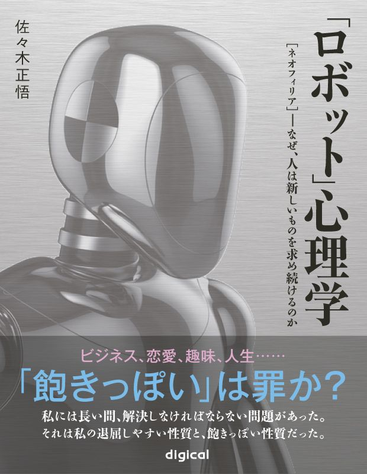

| 「ロボット」心理学 ～［ネオフィリア］ - なぜ、人は新しいものを求め続けるのか (impress QuickBooks) | |
| 佐々木正悟 | |
| (2012) | |

著者紹介
佐
々
木
正
悟
心理学ジャーナリスト。「ハックブーム」仕掛け人の一人。
１９７３年北海道旭川市生まれ。97
年獨協大学卒業後、ドコモサービスで働く。
２００１年アヴィラ大学心理学科に留学。同大学卒業後、04 年ネバダ州立大学リノ校・実験心理科博士課程に移籍。２００５年に帰国。著書に、ベストセラーとなったハックシリーズ『スピードハックス』『チームハックス』がある。人気ブログ「シゴタノ！─仕事を楽しくする研究日誌─」にて心理ハックを連載中。
本書は私にとって、本当の意味で処女作でした。
本当の意味でと言うのは、いわゆる商業出版社から上梓した本ではなく、自費出版で出した本なのです。
傍目にはともかく、自費出版で出す本というのは、著者自身にとっては必要以上に思い入れの強いものです。出版関係者の方などから、「よい本だろうと、大したことのない本だろうと、今の時代本というものは、普通、売れない。だから、あなたの本も、きっと売れない」と当たり前のように指摘されても、実際に本にして世に出すまではずっと「いや、自分の本に限っては」と頭から信じ込んでいたものです。
ふたを開けてみれば、出版関係者の方の言うことはまさに正しく、本書は最終的に８００部も売れることなく絶版となり、残った本は実家に郵送され、押し入れの中に眠ることになりました。
今なら、『「ロボット」心理学』を自費出版で１０００部ばかり刷ったところで、それが「全く売れない」のも当然だということがよくわかります。それでも、本書は私にとって依然として思い入れの強い本です。そもそも、本書の存在がシゴタノ！ の大橋悦夫さんによって読まれ、一緒に仕事をする運びにならなかったら、今私は、本を書いてなどいないでしょう。本書を出したことが、私の人生の最大の分岐点になったことは、間違いありません。
私としては、そうした本を押し入れに眠らせておくのは、何とも残念なことです。折しも２０１０年は電子書籍元年とうたわれていますから、「絶版同然だし、誰に迷惑をかけるわけでもないのだから、いっそ電子書籍として配布してしまおう」と考えたわけです。
前述した大橋さんもそうですが、この本、うける人には妙にうけるところがあるようです。もしかしたら本を書くチャンスは生涯にこれ一回かもしれないのだからと意気込んで、いいたいことをことごとく入れ尽くそうとした本書。笑って読み飛ばしていただくことが、今の私にはなにより、ありがたいことです。
私には長い間、解決しなければならない問題があった。
それは私の退屈しやすいという性質と、飽きっぽいという性質だった。なぜこれら二つの性質が問題かと言えば、退屈と飽きっぽさは私の生活を難しくしてしまったからである。たとえば決して異性にとって魅力的でない私のような男が、女性に飽きっぽかったりすればどうなるか、火を見るよりも明らかだ。あるいは、決して大金持ちに生まれついたわけでもない私が、所有物に飽きやすかったりすればどうなるか、これまた火を見るより明らかだ。さらに、決してそれほど社交的とは言えない私の生活において、何かにつけて退屈をかこつようだとどうか。こういったわけで、退屈と飽きっぽさは影のように私にまとわりつく、私の最悪の敵だったのだ。
この「敵」どもに私が苦しめられるようになったのは、思い起こせる限りでは小学生の、それも低学年の頃だったと思う。私はその日、土曜日の午後だったように思うが、「退屈して」いた。そこへたまたま通りかかった父の姿があったので、退屈で仕方がないから買い物に連れていってくれ、とせがんだことがある。父は私の願いを一蹴し、ついでに嘲笑してこう言った。「ヒマな人間の一番やりたがることが買い物だ」。
父は忙しかったのだが、私はもちろんヒマだった。そして私はこの事実にふと、思い悩んだ。「忙しい」のに比べれば「ヒマ」なほうが幸せなはずだ。それなのに、父のほうが私よりも楽しげなのは、いったいどうしたことか。
おそらくそれからだと思う。私はこの手の「逆説」を、日常生活や本の中に見つけるたびに、それらについて考え始めた。注意を払ってみると、「逆説」はいくらでも見つかるようだった。開発途上国の食べるものも着るものも満足にない子供たちが、モノのあふれた日本の子供たちよりもイキイキしているだとか、あるいは、殺人的な忙しさから解放されてようやく「自分の時間」を見つけられるようになった実業家が、どうしていいかわからずに自殺してしまった、とかいう話である。何不自由のない生活や、あり余る余暇は、人間から挑戦を奪って、生きる気力を殺いでしまうというのである。
そうかもしれないが、しかし私には納得がいかなかった。私の子供の頃、しばしば耳にしたところでは、「社会主義が達成されればユートピアが達成される。地上がユートピアでないのは、自民党の議員と企業家が組んで、利益を独占して享楽的に生きているからだ」というのだ。だが地上にユートピアが達成されたとき、そのユートピアにおける自殺率が、ユートピア以前の自殺率よりも高くなったとしたら、「ユートピア」とはいったいなんなのだろう。開発途上国の自殺率が極端に低く、北欧の福祉大国や日本、「ゆりかごから墓場まで」のイギリスなどで逆に、自殺率が極端に高いのは有名な事実なのである。
解決策らしきことをアドバイスしている本は、だからたくさん読んだ。しかし残念なことに、充実した人生を一生懸命生きることが大事といった、結論に合わせて問いのほうを歪めた「解決策」が山のように出てくるだけだった。私は実にがっかりした。この問題に取りつかれて以来学んだことは、問題が解決されたと感じられぬうちは、決して満足しないという態度を貫くことだった。そうすれば、同じような問題を検討している知性に、いつか巡り合えることになる。
生物学者のライアル・ワトソンは、『ネオフィリア―新しもの好きの生態学』という、ちょっとしたエッセイ集を書いていた。そのエッセイで彼は、「ライオンとトラの極めて大きな違い」について説明している。もちろんライオンとトラは見た目にはよく似ている。だが肉体的にはそっくりでも、心理的には天と地ほども違う、とワトソンは指摘する。
ライオンは生まれついての怠け者。食料さえ十分にあれば、怠惰な生活をいとも簡単に受け入れ、木陰なんぞでこれ幸いとばかり、いくらでも、うたた寝にふける。
トラはそうはいかない。彼らには求めるものがはるかに多いのだ。神経系統が無為を嫌い、長時間くつろぐことを許さない。どんなにたらふく食べさせようと駄目なものは駄目なのだ。檻に入れると、すぐに退屈して落ち着かなくなり、中をうろうろと歩き始める。それだけに、檻で飼うのが困難をきわめる動物だ。（中略）
動物のほとんどはライオンのカテゴリーに入る。生来、保守的で、昔から慣れ親しんだものを求めるのだ。
一部のヒト、時にはある文化全体がこのタイプの場合もあるが、種としての人類はトラ・タイプになる傾向がある。ヒトはチャレンジを好む。進んで新しいもの、違うものを求める。無理をしたり、背伸びをするのが好きだ。刺激を求め、あえてわが身を危険にさらす。わかりやすく言えば、われわれは「ネオフィリック」、つまり新しもの好きなのである。
『ネオフィリア―新しもの好きの生態学』
ライアル・ワトソン著／内田美恵訳／筑摩書房
これを読んだとき、私がどれほど興奮したかおわかりだろうか？ これ以上なく明瞭に、私がどうして「こう」なのかがここに述べられていたのだ。私はいつもいつも、自分自身のネオフィリックにうんざりしていた。自分の所有物に飽き、自分の知識は無価値だと感じ、未知の他人と新たに知り合うほうがきっと楽しいだろうなどと、おかしな推測をする。これがむき出しになると、自分にとっても周囲にとってもろくでもないので、何とか抑えようとかなりの努力を払ってきた。「賢者の言葉」はいつも私を攻撃した。「汝自身に満足せよ」。「汝の隣人を愛せよ」。「古いものを大切にせよ」。どこへ行ってもそれらの「教え」が充ち満ちている。「賢者」が「新製品にどんどん飛びつけ」とか、「気に入ったら恋人をどんどん替えよ」とか、「先祖の霊を敬うことなどまぬけだ」、などと言うことは決してない。だが「賢者の言葉」は、本当の意味では私のような人間の役に立ないのだ。そこにあるのは心がけに関する言葉ばかりで、どうすれば「古いもの」が「新しいもの」よりも良く感じられるのかについては何も述べていない。せめて、なぜ私には「新しいもの」がこんなにも良く見えるのかを教えてほしいものだった。「新しいものに飛びつくのは愚か者だ」、などと何度言われても、古いものが良いと感じられないのなら、どうしようもないではないか。
だがワトソンは答えていた。これは、優生学上の問題なのだ。彼は言う。「新しもの好き
」は「新しもの嫌い
」よりも、生きていくのに有利なのである。新しいものが気にくわない保守派は同じことばかりを繰り返す。同じことばかりを繰り返すのは、人間でいえば専門家だ。プロ野球の選手は専門家
だ。野球ばかりを繰り返す。また、「足のスペシャリスト」は走る仕事ばかりをしている。たしかに専門家は、その専門性が発揮できる環境においては、結構なこと、このうえない。が、ひとたび環境が変わってしまえば、対応能力の乏しさが致命的になる。
たとえばアリクイは、アリを探して食べるのに抜群の才能を発揮する。周囲のどの動物よりも、体の構造や行動が「アリを食う」という行為に向いているのだ。これほどの数のアリを、これほど短時間に食い尽くす動物もほかいないだろう。それはそれで結構、アリが存在するかぎりは......。だが、ひとたびこの食料源に変事が起こると、アリクイは即、アリたち同様、古代の遺物と化す。専門技の発揮できないスペシャリストに未来はない。
『ネオフィリアー新しもの好きの生態学』（前出）
ライアル・ワトソンは、ネオフィリックという性質によって人間は、変化する環境を生き延びてきたのだと言う。「飽くことなく探求を続け、環境の中で自分に有利になるものはないかと気を配って」きたからこそ、人類はこれほどの繁栄をとげた。
そしてしかし、問題はそこにこそあるわけだ。ユートピアを追求する限り、あれこれと新しいやり方を探し求める人間は、充実した生を送ることができる。しかし、ひとたびそれなりの環境を手に入れてしまったなら、むしろその環境を楽しむように努めたほうが幸せなはずだ。しかし、人間にはなぜかそれが困難で、たとえ快適な環境にあっても「飽くことなき追求」をやめられない。
こういった追求癖が単純に、しかも好ましくない形で表れると、刺激を求めてアルコールやニコチン、あるいは覚醒剤に手を出すといったことにもなりかねない。人によっては、ただ単にスリルを味わうために犯罪にまで手を染めないと気がすまない。「何かしていないと落ち着かない」のだ。
とはいえ、ヒトとトラは違う。トラは非常に新しもの好きかもしれない。しかし、ヒトに比べれば、大したことはない。ヒトは動物の中で、もはや動物とは思えないほど、極端なネオフィリアである。新しい家電を欲しがり、新しい自動車を欲しがり、新しい家を欲しがり、新しい恋人を欲しがる。
ここで、同じ「新しもの好き」でもトラと人間とでは「できること」の数に大きな差があることに気づく。トラは新しいものをくんくんかぎ回るだけだが、人間はそうではない。トラは檻の中に入れられていれば、檻をグルグル回るくらいしかできないが、人間はそうではない。人は、「新しいこと」を「作り出す」という能力を持っている。これがトラとヒトの絶対的な違いである。トラは新しいものが好きという意味で、人間の直系の祖先かもしれないが、だからといって、新しい遊びを檻の中で発明したりはできないのだ。人間には、これができる。ちなみにライオンはたぶん、そんなことをする必要を認めないのだろう。
このトラとヒトの共通点と差異について考えることは、非常に有益なことである。どちらもネオフィリアという共通点を持っているから、とても快適な環境でも「もっとよい環境」を求める。つまり、欲求不満に陥りやすい。場合によってはノイローゼにさえなりかねない。一方、両者の違いは、そのいらいらをどうやって解消するか、という点である。トラはあちこち新しいものを求めてさまよい歩くだけだ。が、人間は新しいものを「発明」するのである。
ヒトやトラのような「ネオフィリア」が誕生したわけは、おそらくワトソンが述べているとおり、ライオン型の「スペシャリスト」の欠点を補うためだったのだろう。生きていくために十分な環境で満足しきってしまえば、環境に恵まれているうちなら申し分ないが、環境に恵まれなければ滅んでしまう。遠い昔、トラの祖先がそういう事態を目の当たりにして、「これではいかん！」と思ったのかどうかは知らないが、「もっと良い環境」、「もっと快適な生活」を求めてさまよい歩くことは、いろいろな環境に適応できるという点で生存に有利だろう。そして、人間の環境に対する適応度は極めて高いことでよく知られている。
だが、良いことばかりではなかった。ある欠点を補うための新しい戦略は、常に新しい厄介事の始まりなのだ。トラは、新しいものを求めてさまよい歩くという、スペシャリストにはない能力を身につけたおかげで、ライオンやヘビが至極満足して生きていけるほどの環境でも、欲求不満になる。いろいろな環境下で生きていける可能性という意味で、トラはライオンやアリクイより優れているかもしれないが、どんな環境にあっても落ち着けない、という欠点も背負い込んでしまった。
このことは、ヒトについて考えてみればいっそう明らかになる。ヒトはトラの欠点をさらに補おうと、より良い環境を求めてさまよい歩くのではなく、より良い環境を作り出すという戦略を加えた。そうして出来上がったのが、文明であり、大都市である。が、今度はこの能力がヒトを苦しめる。私たちはトラの子孫たるネオフィリアなので、「どんな環境にも落ち着けない」し、いつも「より良いもの」を探し求めるのだ。そんな私たちが「最高の環境」を手にしたりすればどうなるか。「最高の環境よりもいい環境」を生み出さなければならなくなるに決まっている。こうして人間は、「際限のないテクノロジーの日進月歩」に苦痛を感じ始めても、なお「最先端の技術革新」に日夜励むという奇妙な行動がやめられない。ひどい場合には、ライオンやアリクイをいささか軽蔑しながらも、うらやむのである。「いいね。あんな環境で幸せを感じていられるなんて......」。あるいは、「アリクイ型」や「ヘビ型」の「人間」をいささか蔑視しながらこんなことを言うのだ。「そりゃ、そこら辺の環境で満足できる人はいいよ......。でも私は違うもの......」。
しかし、私はこう思う。人間にはライオンやアリクイをうらやむよりも、もっとましなことがやれるはずだ、と。そもそも、ネオフィリックである人間が、生活環境の改善を目指して、自殺率の上昇という事態まで招いたところには、自らの能力に対する奇妙な無知があったらしく思うのだ。ライアル・ワトソンがトラとヒトを比較して「ネオフィリア」と指摘したのさえ、結構最近のことなのである。人間というネオフィリアは、新しいものを探すことや作ることにかけては、じつに驚異的な能力を発揮して目的を達成してきた。しかし自分たちがネオフィリアであることや、ネオフィリアであるとはどういうことを意味するのかについては、めったに考えようとしない。言ってみれば、自分自身の性質に駆り立てられながら、その自分の性質について考えることを、あまり好まないようなのだ。
ワトソンは、今や何でもそろっている大都市で生きる人間の運命が、檻に閉じ込められているトラのようなものだと指摘して、人間が都市生活でおかしくなるのももっともだと述べる。そうかもしれないが、人間ならば自分のノイローゼを診断して、治すこともできるはずだ。トラなら檻の中をグルグル回ったあげくノイローゼになるのもやむを得ないかもしれない。しかし、人間が同じように都市の中をうろうろさまよったあげく、「人生に絶望」して自殺してしまうようでは、「最高知性の霊長類」の名に恥じるというものだろう。
ここで誤解のないように、予め断っておこうと思う。
「新しもの好き」というと、「軽薄な現代人」という連想をする人が多いかもしれない。そして私は、そうした連想が間違いだとは言わない。しかし、トラがすでに「ネオフィリア」だとライアル・ワトソンは言っているのだ。江戸時代より、平安時代よりも以前から、トラは地上に生きていたはずである。明らかに、「ネオフィリア」は「戦後のアメリカ化された新人類の特徴」とは言えない。古代の人類の祖先だって、「ネオフィリア」だったはずだ。現代のアメリカ的なフロンティア・スピリッツが、人間のネオフィリックをいっそう刺激したということはあっても、敗戦後にたちまち軽薄なネオフィリアが突然変異的に増加した、という話はもっともらしくない。
さらに、「ネオフィリア」は必ずしも、「新製品」を「旧式品」より高く買うとは限らない。
読者が男性の場合には説明しやすいだろう。ちょっと品のない例ではあるが、アダルト・グッズというものがこの世にはいつの時代もあったと思われる。もちろん今の時代にもあって、圧倒的多数の男性諸氏は、ベッドの下とか押し入れの奥とか、今ならばパスワードのかかったフォルダの中とかに秘蔵していることだろう。そこでだが、こういうものの数は、個人の所有物としても相当数に上るものだ。羞恥心に打ち勝つことさえできれば、人によってはちょっとした「官能の個展」を開くことができるかもしれない。
しかし、ここで疑問がわく。どうして、それほどたくさんの「ブツ」を所有しなければならないのだろう。なぜ、たった一つの「お気に入り」だけではダメなのか。この手のものはたいてい、決して出来が良くない。アダルト漫画にせよ、アダルトアニメにせよ、アダルトビデオにせよ、官能小説にせよ、いい加減なものが幅をきかせがちだ。だとすると、つまりいい加減なものが多いということが明らかならば、あれこれと手を広げることに意味はないはずだ。しかし、少なからぬ男性は、文字どおり「手に余るほどの」所有物を隠し持っている。
答えは１つしかない。なぜか「同じブツ」の「興奮度」は、それによって性的なエクスタシーを得るたびに、下がっていくのである。こういう場合の男にとっては、「ブツ」が「新製品」であるかどうかなど、大した問題ではない。中古だろうと、友達の使い古しだろうと、自分の気に入った傾向を持った「見たことのないもの」ならば、「何が何でも欲しくなる」のである。
これこそが、「ネオフィリア」の定義にほかならない。「ネオフィリア」は「新しもの好き」というよりも、「珍しもの好き」なのであって、その理由は「珍しいもの」が自分の「退屈な日常」を一変させてくれるように思えるからなのである。だが、なぜそんなふうに「思える」のだろう？
第一章
ネオフィリアと「ロボット」
１
ネオフィリア（新しもの好きの心理）
２
「ロボット」というアイディア
３
「ロボット」の目的
４
「ロボット」の問題
５
新しい「ロボット」
６
「ロボット」へ向かうネオフィリア
７
「やりたいこと」と「やりたくないこと」
第二章
やりたいこととネオフィリア
第三章
やりたくないこととネオフィリア
第四章
ネオフィリアであることの価値
※本書は２０１１年２月14
日にシゴタノブックスより発売されたものです。
ライアル・ワトソンが『ネオフィリア―新しもの好きの生態学』で指摘したのは、「新しもの好き」の「生態学」である。どういうことかというと、「なぜ新しいものが好きか」を問題にはせず、「新しいものが好きだから」ヒトやトラは面倒な事態に陥る、ということを指摘しているだけなのだ。
ワトソンの著作は、私を感動させた。が、それでもまだまだ不十分なのだ。なぜならば、私が本当に知りたかったのは、「どのようにして」私は「新しもの好きであるか」という心理的（認知的）なポイントだったからである。たとえていうと、ガソリンで走る自動車は、電気で走る自動車よりも普及した、と知ったとき、その「理由」を尋ねたくなるようなものだ。「なぜなら、ガソリン自動車のほうが便利で速いから」と教えられたとしよう。あなたは、この答えに満足がいくだろうか？ 私には満足できない。続けて、こう尋ねたくなるだろう。「どうして、ガソリン自動車のほうが、便利でしかも高速なのか？ ガソリンを使うのと、電気を使うのとでは、どういった違いを生み出すのか？」。これに答えてもらわなければ、ガソリン自動車の本当の利点はわからない。同じように、ただ単に「新しもの好きは生きていくうえで有利だ」と知るだけでは十分ではない。「どのようにして」私たち人間は、新しいものが「好き」だと感じるのか。そのからくりを理解しないうちは、「ネオフィリア」とはどうして新しもの好きであるか、という点がわかったことにはならない。
英国の文学批評家であり、小説家であり、哲学者であり、オカルトや犯罪の研究家としても知られるコリン・ウィルソンが、「ロボット」という心理学的な概念を発表した。この「ロボット」というアイディアこそ、人間が「どうして」ネオフィリアであるかを理解するカギになる。まずは、ウィルソン自身の定義を説明していこう。
コリン・ウィルソンによれば人間の非常にユニークな特徴の一つとして、「ロボットを使う」、それどころか「ロボットになってしまう」ということが挙げられる。「ロボット」という言葉によって彼が指している意味は、つまるところ人間の学習能力のことなのである。人間は、外国語を習得したり、ピアノを弾けるようになったり、自動車の運転ができるようになったりする。いわば「ロボット」によって人間は、「環境を変える」ことや、環境に合わせて「自分を変える」ことができるのだ。生まれながらにして言葉を話せたり、運転ができるという赤ん坊はまずいない。ほとんどすべての人間が、訓練を経て、言語や運転を「学習する」のだ。
これらはすばらしいことである。が、大きな問題が一つある。人間はこの学習能力の高さによって、他の生物を圧倒したわけであるが、自分がいったん学んでしまったことに対して、妙に飽きっぽいという問題を抱えている。「慣れは軽蔑を生む」わけである。人間はなぜか、「今できる」ことは価値のないことだと感じ、「今はできない」ことこそが魅力的だという感じを抱く動物である。
ウィルソンは自分の家の近くから、海辺に至る道が、狂牛病の予防のために閉鎖されていたときのことについてこんな話をしてくれた。「もしも、狂牛病の恐れがなくなって海辺までまた散歩できるようになったら、ここの村の人たちは大喜びで海辺まで歩いていくだろう。が、それが普通のことになってしまうと、みんな海辺までの道のりなんて退屈だと思って、ほんの一握りの人しか散歩を続けないだろうね」。私の友達のアメリカ人は、もっと大きな問題について、全く同じ点を指摘した。イラク戦争の終結時、サダム・フセインの銅像がロープをかけて倒された。その際、「今はバグダッド市民も、解放の自由を満喫して狂喜しているけれど、やがては自由が当たり前のことになって、アメリカ兵の占領がけしからんとか何とか言い出すだろうさ」（後の展開からすると、なかなか予言的でさえある指摘だった）。
今度は、私自身の例を挙げる。以前、携帯電話会社に勤めていたときのこと。そこでの仕事は単調ではなく、コンピュータを使って結構複雑な事務作業をこなすように求められるものだった。私はそういうハイテク機器を使っての事務作業を生来好むたちなので、勤務して間もないころはそこそこ興奮も感じながら、毎日会社へ通っていた。だがやがて、そういう決まりきったルーティン・ワークというものは、「ほとんど無意識のうちに」処理できるようになってしまうものである。そうすると非常に退屈を覚えるようになってしまった。つまり私の心の中で、サダム・フセインの銅像を倒したバグダッド市民に起きた心理作用と、全く同じメカニズムが働いていたわけだ。
ウィルソンはこの心理作用をもたらしたものとして、「ロボット」と呼ぶ認知的な「学習装置」を指摘する。人間はこの「ロボット」のせいで、繰り返し同じことをするうちに、楽しみを徐々に失ってしまうのだ。
彼には大きな欠点がひとつあった。私が深く感動的な交響曲や詩や絵画を発見しようものなら、この忌まわしいロボットはすぐさま行動に移ろうと主張するのである。そして私がその交響曲を三度目に聞くときには、彼はあらゆる楽譜を先に読みとり始める。自動的にそれを聴き始めるのだ。私は愉しみをすべて失ってしまう。疲れているときなど、彼がとても迷惑なものに思える。というのも彼が、私にたずねてみもしないで、私の役目の多くをやってのけようとするからである。私が妻と愛を営んでいるところを押さえたことすらあった。
『コリン・ウィルソン評論集』
中村保男・中村正明訳／扶桑社
この「ロボット」が、人間の「ネオフィリック」な傾向を、強烈に後押ししていることは間違いない。同じ体験を繰り返すうちに、「ロボット」は成長する。そして、人間は同じ体験から同じ興奮を得られなくなってしまうのだ。一度目よりも二度目の体験は、簡単であると同時に少し退屈になる。二度目の体験に比べれば、千度目の体験は、はるかに「わかり切った」ものだし、そして非常に「つまらない」。生まれて初めてハワイ旅行をすれば感動するだろう。しかし、百度目のハワイ旅行となるとうんざりかもしれない。「せっかくたくさんのお金を使うのだから、まだ行ったことのないところがいいわね......」。これは、ネオフィリアならではの台詞だ。逆に、「お金をたくさん使うんだから、前に行ったところが楽しかったし、あそこへ行って全く同じことをしましょう。そうすれば確実に楽しめるんだから......」とヒトが言うのをあまり聞いたことがない。「全く同じところ」へ行っても、「楽しみ」のレベルは「全く同じ」ではなくなるからだ。ヒトはネオフィリアなのである。「全く同じ体験」では「楽しみ」は減じてしまうのだ。これが生じるのは、同じような体験に対して、人間の内部の「ロボット」が育ち、勝手に「旅行」を代行するせいなのである。
子供にも大人にも、「ロボット」のもたらす、「ネオフィリック」な心理はある。子供が泣き叫んでまで親に買ってもらったおもちゃを大事にしないように、多くの人は自分の自由を大事に「できない」。スイミングスクールに通う子供が泳げるようになってしまえば、泳ぐことなど大したことには思えなくなり、空でも飛びたくなるかもしれない。どうしても運転ができるようになりたくて、大金をはたいて免許教習所に通い続け、ニカ月後ついに免許を取ったときの感動は、決していつまでも続くものではない。いつしか、居眠りしないように濃いコーヒーを何杯も飲まないと、高速道路の運転さえ退屈のあまり寝入ってしまうだろう。そうして事故死する人が、毎年あとを絶たない。
こんな迷惑な「ロボット」が人間に備わっている、その目的は何なのだろう。
何よりも押さえておく必要があるのは、「ロボット」は心理学用語でいうところの「自動化
」であり、複雑な一連の作業を楽々こなせるようになるための、複合的な記憶力の産物だという点だ。生きていくことは、実に複雑で大変な作業の連続だ。だから、もっと容易にヒトが生きていけるように、「ロボット」が手助けしてくれるわけである。重要でない仕事は「ロボット」に任せてしまおうということだ。
つまり、「ロボット」の目的とは、「重要なことだけに、ヒトの注意を向けさせること」である。重要でない仕事は「ロボット」に大事なことは「人間」が。
生物にとって何よりも大事なことは、生きることだ。生き延びるために何よりも重要なのは、危険を察知することだ。だから、極端な話、「危険でないもの」は全部、「ロボット」に任せてよいわけなのである。大事なこととは「危険」に「注意」を向けることである。「危険でないもの」は「ロボット」が「処理」してくれればいい。「人間様」が「注意」する必要はないのである。
二〇〇四年に発行された「サイエンティフィック・アメリカン」の特集号に次のような記事が掲載されている。
注意と実際の自意識の特性は、脳が重要、もしくは新しいと判断した出来事や問題に直面した際に表れる。多様なタイプの記憶の助けを借りて、脳は知覚した内容を重要か否か、知っているか否かによって分類する。もし、ある物事が重要でないと判断された場合には、それは意識には上らないか、上ったとしても漠然と意識されるだけだろう。「重要だがしかし知っている」情報は、以前にそれを処理したやり方を思い起こさせる。そうすることで、脳は決まりきった活動を執り行う。なぜならそうすれば、最小限の意識を喚起するだけですむからだ。（邦訳 筆者）
「SCIENTIFIC AMERICAN SPECIAL EDITIN EIND」
the quest to find consciousness by Gerhard Roth
この記事は、ネオフィリックと「ロボット」についての、この上なく明快な説明と言えよう。人間の脳は、注意力や自意識を「節約する方向」に力を注いでいるのだ。そしてそれこそが、「ロボット」の目的なのである。人間の脳は「未知でしかも重要な」ことのみに注意を払うようにできている。そういったものは、生存を危機にさらす可能性が高いからである。もしも脳が「重要ではない」と判断すれば、それにはもう注意は払われない。たとえ重要ではあっても、「知っている」事柄は「かつてのやり方」が適用されるだけである。言うまでもなく、これが「ロボット」である。
つまり、「ロボット」が人間に備わっているわけは、人間の自由を拡大するためにほかならない。この点は、非常に大事である。「ロボット」は厄介者ではない。もしも人間が自由を必要としているのであれば...。しかし、もしも人間が自由を欲していなければ、「ロボット」は厄介者である。
ここで、「ロボット」の特徴をいちいち挙げていってみよう。そして、どんなに「ロボット」が人間の自由に役立っているかを、確認してみたい。そうすれば、「ロボット」の性質が非常にはっきりするだろう。
①「ロボット」は何かに挑戦した成果を保存しておく。運転が一番いい例だろう。いったん運転できるようになってしまえば、よほどのことがない限り（つまり脳の特定の部位がダメージを受けない限り）運転ができなくなる、ということにはならない。このようにして、人間は新しい技術を獲得した成果を、「ロボット」にして装備する。そして必要な場合に再利用できるようにする。これは人間の自由を拡大している。
②「ロボット」は何かを見、聞き、知ったということを保存しておく。こうすることで、人間は世界のどの部分はすでに織り込み済みであり、どの部分はまだ未知であるかを区別できる。そうすれば、既知の部分についてあれこれ悩まずに済む。このこともまた人間の自由を拡大している。
③「ロボット」は、特に使い込まれれば、ほとんど無意識のうちに仕事を処理してくれる。急いでいる月曜日の朝、あなたは何をどのように料理して食べたか、ほとんど思い起こせないかもしれない。その間には、ほかのことを考え、ほかのことを準備していたのだ。こうして人間は、自分のやっているあれこれを「ロボット」任せにして自分はほかのことをしていられる。自由の拡大である。
④「ロボット」は一つの重要な仕事を成し遂げるために、グループとしてチーム・ワークをなす。あなたが取引先のお得意様と重要な契約を取り付けられるのは、日本語を操る「ロボット」、パソコンを操る「ロボット」、書類を作成する「ロボット」、上司の指示を記憶している「ロボット」などが、スムーズに仕事を処理してくれるからである。さもなければあなたは日本語を聞き、喋るのに膨大な注意力を用い、またパソコンを使うのにも多大の注意を払い、あげくの果てには上司の指示をきれいさっぱり忘れてしまって、とても取引先との契約にこぎ着けるどころではなくなるのである。
こんなふうに、たくさんの「ロボット」は人間の自由を拡張しようと、日夜奮闘している。この見方によれば、人間の自我とはあたかもたくさんの部下を監督しているマネージャーのようなものだ。おかげで人間の自意識は全く自由だ。飛行機に乗っていて、くだらない後ろの若夫婦の痴話げんかなど「ロボット」任せ（聞いていない）にし、それどころかもっと大事な「安全のための注意事項」のアナウンスだってたいていは「ロボット」任せ（聞いていない）、無意識のうちにコーヒーを飲み（「ロボット」任せだから味は覚えていない）、耳にイヤホンを突っ込んだまま（聞こえていても聞いていない。「ロボット」任せなのである）、知らないうちに眠ってしまう。このすばらしい「ロボット」の働きは、「小人の靴屋」の童話にファンタスティックに描かれているとおりだ。おじいさんが眠っているうちに、「ロボット」たる「小人」たちが仕事を終えておいてくれるわけである。
が、すでにここに問題が表れている。「ロボット」が奮闘するのは自由の拡大のためだ。なのに、マネージャーときたら、自由になってさあどうするのかというと、結局は「知らないうちに眠ってしまう」だけなのだ。そんなことでいいのだろうか？ これでも人間は本当に自由を欲しているのだろうか？ 人間は、新しいおもちゃを本当には必要としていない子供のように、自由など本当には必要としていないのではないか？ ここに、非常にやっかいな「ロボット」の副作用がある。「ロボット」は、「サイエンティフィック・アメリカン」の記事にあったとおり、生物にとって「重要」と思われる場合を除き、心のエネルギーを「節約する」方向へと働くのだ。その目的は自由の拡大ではあるが、ご当人が自由を活用しようとしていない場合、エネルギーがどこまでも下がっていくばかりなのである。いやなこと（危険）がなければ、という但し書きがつくけれど。
注意深い読者はここですぐ気がつくだろう。「ロボット」を使いこなすのが得意な人ほど、一歩間違うと人生は、「徐々に楽しみが失われる」ばかり、たまに「はっとする」のは「危険なことがあったとき」のみ、ということになりかねない。ひとことで要約するなら、人生とは、退屈プラス危険。ゼロとマイナスだけで成り立っている。ずいぶんなものだと思うのももっともだ。鬱病になっても仕方がない。先進国の自殺率が高いのも、ムリもないとさえ思えてくる。
具体的に言えば、ぐったりと疲れているときや、些細なことで気持ちが落ち込んで人生を不信の目で眺めているときの、あの独特のよそよそしさを体験することになるのだ。上司につまらぬ言いがかりをつけられてどっと落ち込んだりしていると「何をしてもつまらない」ように思えることがある。こうしたときは、なぜか本当に「何をしてもつまらない」し「何を見ても味気ない」ものである。なぜなら、本書の考え方を採用するなら、「ロボット」が大活躍をしているからなのだ。
ご当人であるマネージャーがお疲れになっているということで、「ロボット」にはできる限りたくさんの仕事を徹底的にこなす用意ができている。たとえば、上司にいじめられてげんなりしているご当人が、気分を晴らそうと思って元気の出そうな音楽をかける。しかし、「ロボット」はこれを聴いて次のように判断する。『この音楽は別に「新しく」もなければ「危険」でもない。つまり、「重要」ではない。こんなにお疲れになっているご主人様の心を、「重要でない」ことで煩わすわけにはいかない。だからこの音楽には「最低の注意」しか払わずにすむように「処理」してしまおう。』こんなふうにして、最低の注意しか払わずに音楽を聴いても、音楽が「遠くで」鳴っているようにしか思えない。そこで今度は、花が咲き乱れて日光がさんさんと注いでいる美しい風景を窓から眺める。それで気を晴らそうとするのだ。が、それに気づいた「ロボット」がこう判断する。花が咲き豊かな日光が差し込む平和な風景。こんな風景を見るのは「初めてではない」し「危険」でもない。つまり、「重要ではない」。そんな重要でもない風景を見るのに、お疲れになっているご主人に注意を促すわけにはいかない。風景を眺めるのに「必要ぎりぎりの」注意量だけを使って「処理」することにしよう。こうしてまたも、素敵なはずの窓の景色はやけに「よそよそしく」映る。音楽を聴いてもよそよそしく、景色もよそよそしく、あなたの心は沈んだまま。そろそろ次のように思い始めている。「私の人生って、なんて陰鬱なんだろう」。
問題なのは、「ロボット」とご主人の間のコミュニケーションがまるでかみ合っていない点なのである。「ロボット」はご主人のためを思って奮闘しているのだが、それがことごとく裏目に出てしまっている。ご主人のほうはご主人のほうで、自分の部下のせいで現実世界がオブラートにくるまれたようによそよそしくなっているのに、それを何か客観的理由によるもののように誤解しているのだ。
こういうことになるのは、「ロボット」が「自分の内部」で仕事をしている事実を忘れてしまっているからである。「風景がよそよそしい」のはそのせいなのだ。これは「主観的事実」なのである。
それにたいがい、現実の情勢はさらに良くない。というのも、今の例では好ましい刺激以外に刺激は存在しなかったが、現実には素敵な音楽や素敵な景色以外にも、ろくでもない隣人のどなり合いだの、けたたましいバイクの騒音だのがあるのだ。
それにしても、なぜ素敵な音楽や窓の景色は「よそよそしく」て、バイクの騒音だの嫌な隣人だの、鬱陶しいだけのものがやけに「注意を引く」のか？ この答えも、「ロボット」に聞けば簡単だ。「ろくでもない隣人」は「危険」かもしれない。それほど重大な危険ではないにせよ、咲き乱れる花よりはずっと危険である。だから、お疲れのご主人には申し訳ないが、そうは言っても「重要な」ことなのだから、美しい花のことなどはわれわれ「ロボット」に任せていただき、ぜひとも「ろくでもない隣人」にこそ注意を払うように、と促してくる。要するに、「ロボット」に悪気はなくても、「ロボット」の判断は、疲れているご主人をさらに一層くたびれさせ、人生に嫌悪感を抱いているご主人に、嫌らしい現実ばかりを持ち込んでくる羽目になるのである。この状態を人は、「最近なんだかろくでもないことばかり......」とこぼすが、そうではないのだ。「いいこと」も結構起きているのである。ただ、そっちのほうは「ロボット」が処理し、「いやなこと」に注意を集中しているから、そういうふうにしか思えないだけだ。そんなことになったのは、「疲れているから注意量節約！」という絶対命令を、「ロボット」が忠実に実行しているせいなのである。
しかしながら、私たち人間は「ネオフィリア」である。以上のようなことは、すでに内部に作ってある「ロボット」の副作用にすぎない。が、人間はすでに指摘したとおり、新しい「ロボット」を作り出すこともできるのだ。そんな副作用をもたらすような、ポンコツ「ロボット」はすぐさま廃棄処分にし、新しいもっと有能な「ロボット」を導入すればいいのではないか。
こういうことは、現実にはよく考える。たとえば、私は留学時代、「一日のすべての時間を英語だけ」で過ごそうという、むなしい挑戦を何度もした。なぜそういう無理なやり方にひた走るかといえば、中途半端な「ロボット」の副作用が苦痛になるからだ。日本語を読む「ロボット」ほどに、英語を読む「ロボット」が優秀になってくれれば......なんと自分の留学生活は華々しいものになるかしらん......と夢想する。ダメなポンコツ「ロボット」はさっさと回収トラックに持って行ってもらうにかぎる。何しろ、一ページの英文を読むのに五分も十分もかけたあげく、もうベットに向かいたくなるようでは、いつになったら三十ページもの英文を読んでレポートを書いたりできるか、見通しが立たない。人生が暗くもなるというものだ。「新しいロボット」はそんな問題を一掃してくれるに違いない！ そのためにも、朝から英語でニュースを聞き、アメリカ人の友達としか話をせず、娯楽のための小説も漫画も全部英語のものにしたら、私の中の「ロボット」がたちまち日本語並みに優秀に......。
やってみればすぐにわかることだが、「新しいロボット」を一体導入するのは、古い「ロボット」の副作用に苦しむことの、さらに十倍以上も苦しい。もちろん私たちはもう忘れているが、「日本語ロボット」だって初めのうちはきっと大変な苦労の果てに導入したものなのだ。いや、それどころか、「歩くためのロボット」だって、生後一年以上はかかった代物なのだ。今、年配の人は「ウィンドウズ」だの「インターネット」だの、文字どおり生まれて初めて目にするような機械を操作する「ロボット」を持たないせいで、ずいぶん理不尽な目に遭っている。成人しても満足に泳げない、という人は、水に入るときの恐怖というものをよく知っているだろう。「ロボット」なしで新しいことに挑戦するということは、多くの場合、恐怖である。初めてセックスするときの恐怖は、一般に女性のほうが大きいだろうが、男性にとってもゼロではない。
ここで、ヘビやアリクイのことを思い出そう。普通の動物は「新しもの恐怖
」にさいなまれている。これは当然である。「新しいこと」は「危険」だからだ。一般の動物にとって最高の金言は、「君子危うきに近寄らず」だ。「新しもの好き」とは、動物にしては変わり種なのだ。人間は、明らかにその中でも大変な変わり種だ。つまり、人間の心の中には、ものすごい「特殊な力」が働いていると考えるのが自然だろう。それが、「新しいものはすばらしい！」という心理だ。これほどの力が働かなければ、おそらくヒトは、他の動物と同じように、「同じ家」、「同じ友達」、「同じ食べ物」、「同じ恋人」、でいつまでも満足至極で幸せであったはずだ。もちろんその場合、住んでいる家は今もなお「竪穴式住居」がせいぜいだろうし、平均寿命も三十歳を下回っているはずである。
「新しいロボット」を導入するのがそれほど大変でも、社会はなお挑戦しようとすることを、過剰なくらい奨励する。人間社会に生きていると、さしたる根拠もなく「新しもの嫌い」はさんざんにこき下ろされる。『ぼくは日本語だけできれば、英語なんかに興味はない。別にきれいな家なんかに住めなくってもいい。結婚なんかできなくってもいい。友達だって、大勢欲しいとは思わない。毎日同じものを食べてりゃいい。お金は、今のこの暮らしが維持できれば十分だ』。こんな「慎ましい」欲求の持ち主が、「自由主義国ニッポン」で悪し様に罵られる。「それで生きてるって、言えるの？ そんな人生で、むなしくないの？」これではまるで、「ネオフィリアにあらずんば、ヒトにあらず」といわんばかりだ。少なくとも、義務教育まで終わらせるとなれば、「ぼくは英語になんか興味ないよ」では通らない。
「新しいロボット」を作ることに挑戦することほど、社会が手放しに賞賛することも他にはない。新聞には、「ペン字」や「生け花」や「尺八」などの通信講座の広告が、一面全部を毎週占領する勢いがある。そこにはこんなふうに書いてある。「新しい趣味に挑戦」、「老後を豊かに」。つまり、「豊かな人生」とは「新しいロボットを増やすこと」で得られる、となるらしい。社会にこのメッセージが通用するのだから、極めて多くのヒトの中に、「ネオフィリック」はきっちりと植え付けられている。「新しいこと」は考える余地のないほど明瞭に「望ましいこと」なのである。
とはいうものの、理想と現実は違う。どれほど、人間が「新しいロボット」に魅力を感じていようと、またどれほど社会や学校が口うるさくせき立てようと、思ったとおりに生きられる人というのはそうめったにいない。英語はもちろん、中国語もスペイン語もドイツ語も、果てはラテン語までマスターして、ピアノもバイオリンも尺八も吹けるし、スキーもスノーボードもオリンピック選手並み。そんな人はそういるものではない。「新しいロボット」を作るのは、骨が折れるからだ。
だからといって、いつまでも必要最小限度の「ロボット」しか持たない、といっても限りがある。いくら同じものだけで我慢ができるといっても、一冊の童話と一冊の漫画、一枚のＣＤだけでずっと満足して、気がついたら還暦を迎えていた、という人はまずいないだろう。それに、今述べたとおり、そんな生き方はあまりにも社会に対して挑戦的だ。この生き方そのものには、どこにも「挑戦的」ということはないのだけれども、人間社会はこれをひどく嫌う。ヒトは、社会的圧力から無縁ではいられないものである。
そこでごく当たり前に、両者の折衷へと向かうわけである。足して二で割るのだ。あまりにもネオフィリアとして生きるのは大変すぎる。しかし、ある程度はネオフィリックな欲求も満足させたい。これを男女関係に応用していえば、ばれない程度にほどほどの「火遊び」は悪くない。しかし、基本的には一人いれば十分だ。あるいは、小説の好みはどうだろう。基本的に、気に入った作家を一人見つければずいぶん楽しめる。というのも、あるいはまさか同じ小説を何度も何度も読むわけにはいかないからだ。なぜなら「ロボット」が代行するネオフィリアだからと言える。でも、毎度毎度新しい小説家を開拓するのも大変だ。それには「新しいロボット」を導入しなければならない。だから、二ヶ月に一冊くらい、「同じ作家」が「新刊書」を書いてくれればいいのに、と思う。漫画でも音楽でも同じであろう。「同じ」作家や作曲家の「新しい」作品こそ、人々がもっとも欲しがるものだ。一方で自分の中の保守的な部分に基本をおいて、そこから自分の中のネオフィリックな部分を満足させる。
このようなやり方こそが、ヒトというネオフィリアの実際にとっている現実主義だろう。そして、実はここには、安易な妥協というよりも、なかなか興味深くて巧みな戦術が見えてくるのである。
ヒトというネオフィリアと、トラのようなネオフィリアの根本的な違いは、持ちうる「ロボット」の数だということはすでに指摘した。なにしろ、「ロボット」を開発してその数を増やすことができるのだから、ヒトの持ちうる「ロボット」の数は、事実上無限とさえ言えるのである。結果として、ヒトというネオフィリアは「ロボット」に対して「新しもの好き」であるということができよう。トラは、新しい体験を欲しがった。新しい刺激を追い求めるだけの、ネオフィリアなのだ。しかし、ヒトは同じような体験に、「新しい側面」を見いだしたがるネオフィリアなのだ。このことを、ヒトの内面に即して言い換えるなら、ヒトは自分の中の「ロボット」に、新しい能力を付け加えたがるネオフィリア、「ロボット」の新しい部分を使ってみたくなるネオフィリアだと捉えることができる。この点を、じっくりと考えてみたい。
トラが「新しい体験」を求めるときには、「体験」自体の新しさに気を奪われている。子ウサギのような小動物をもてあそんだり、駆り立てたりすることを、トラは楽しむかもしれないが、獲物が「子ウサギ」であろうと「リス」であろうと、トラにとっては大した違いはないだろう。しかし、人間はそうは考えない。
ハンティングを趣味とする人は、まず間違いなく、「子ウサギ」なら「子ウサギ」を、「リス」なら「リス」で、自分のハンティングを区別するに違いない。ある人がお昼休みにバルザックを読むことと、ファッション雑誌を読むことの間には、傍目にも本人にも、はっきりとした違いがある。しかし、もしその光景をトラが見たら、全く同じように見えるに違いない。そして、いつまでも本にじっと目を落として、時折ページをめくる以外には、長時間大きな動作をしないその姿には、少しもネオフィリアらしいところを見いだせないだろう。ヒトの活動は細かい。なぜならば、ヒトの「ネオフィリック」は自分の内部へと向かっているせいだ。ヒトの本質的な興味は、自分自身の中にある新しさに向かっているのである。だから、しばしば活動自体には変化がないように見えるのだ。『ドラえもん』の第一巻を読むことと、『ドラえもん』の最新刊を読むことの間には、はた目には何の違いもないが、人間はそこに違いを見いだす。
こうしてみるとわかるとおり、ヒトというネオフィリアを駆り立てているのは、「ロボット」という学習装置を拡充することのようだ。ここまで常にそうであったとおり、ネオフィリアであるということと、「ロボット」を駆使することは、ともに欠かすことのできない連係プレイなのである。「新しいロボット」を作り出すことや、「新しいロボットの側面」を見いだすことに夢中になるには、ネオフィリアでなければならない。「ナマケモノ」はとてもそんなことをする気にならない。そしてまた、「ロボット」があるからこそ、何が「新しく」、何が「昔ながら」であるかの判別ができる。すでに読んでしまった本は、まだ読んでいない本に比べて魅力があせがちになる。少なくとも同じ作者の作品ならば、そうだろう。この類別は、「ロボット」がしている。そして、「ロボット」が「読んだことのある本」を、同じように読むという自動処理を施すからこそ、エネルギーが解放されるのだ。そしてその解放されたエネルギーを、別の「新たな」方面へ向けようとするのが、ネオフィリアである。あるいは、ネオフィリアであるからこそ、エネルギーの解放という成果を「ロボット」が生み出したのだ。
もう一つの比喩が、さらに「ロボットの拡充」というネオフィリアの欲求を明らかにするだろう。「ロボット」はある程度現実に沿うかたちで、「カテゴライズ」できる。たとえば、「読書するロボット」という「ロボット」の下位分類として、「漫画を読むロボット」や「小説を読むロボット」を考えることができるだろう。「漫画を読むロボット」のさらに下位の「ロボット」たちとして、「手塚治虫を読むロボット」や「藤子不二雄を読むロボット」を考えることができる。これはとても大事な点だ。なぜならば、「飽きる」という心理は、これら「下位のロボット」を「使い切った」というシグナルであるとみなすことができるからだ。たとえ「藤子不二雄の漫画」のすべてを読み切っていなくても、「藤子不二雄の漫画はもういいかなって感じがする」ということはあり得る。このことの意味は、「藤子不二雄の漫画」に「新しい作品」はあり得ない、ということではないだろう。そうではなくて、「ロボット」の新しい使い方ができなくなりつつある、という意味のはずである。そこで、他の作家の作品を漁りだす。つまり、今度は「手塚治虫の漫画を読むロボット」の拡充に乗り出すのである。しかしそれですら、いつかは飽きるときがくる。やがては、「漫画を読むロボット」そのものが、どんな作家のどんな漫画を読んでも、わかり切ったパターンのいずれかを示すようになるだろう。すなわち、「漫画を読む」ことに飽きるのである。
そこで次には「小説を読むロボット」に乗り出すだろうか。しかし、ここには人によるが、容易に渡り得ないミゾがある。「漫画を読むロボット」と「小説を読むロボット」とでは、同じ「本を読むロボット」とはいえ違いが大きすぎるのだ。つまり、類似のカテゴリにおける「ロボット」同士であっても、上位に行くほどその差は大きくなる。ここで、「新しいロボット」を開拓することは難しい、という先に挙げた難題にぶつかる。だから、多くの人が読み慣れた作家の新刊書を求めるのだ（私にもこうした読者がついてくれることを、今、心の底から望んでいるが）。できれば、「なじみ深くて、でも新しいもの」を求めるというのが、人というネオフィリアの現実なのである。ラーメンが大好きな人は、食べたことのないラーメンを食べたいとは思う。しかし、食べたことのないサルの脳味噌には二の足を踏むだろう。新しいほどいいようでも、新しすぎるのは考えものなのである。
ここまで、「ネオフィリック」という心理と「ロボット」が二人三脚を組んで、同一の体験や作業に飽きさせてしまうという流れを追ってきた。ある意味で、活動が同一であれば、好ましいことだろうと好ましくないことだろうと、この効果は発揮されるのだ。さらに、同一ということが、カテゴリに対して適用されること、つまり、似たようなカテゴリの活動は、いつしかカテゴリ全体に対して「倦怠感」がにじんでくるメカニズムも、いささかおおざっぱにではあるが、説明してきた。実際、数多くの女性を口説き落とす手管を備えたドン・ファン氏は、まずは、付き合っている女性に飽きてしまうのだろう。しかしいつしかは、デートやセックスという行為自体に飽き、最後には、女性全体に飽きてしまうかもしれない。それは、カテゴリである。つまり、いくらドン・ファン氏とはいえ、三十億人の地球上の全女性とつきあってみることはできっこない。だから、「飽きる」というのは、実のところ、カテゴリに対して飽きるのだ。「女性」というのはカテゴリだ。「デート」が一つのカテゴリであるように。
一方で、やりたくないことに慣れる場合にしても、大まかな流れに違いはない。会社勤めが芯から好きという人には理解されにくいかもしれないが、まずは会社の業務に慣れていく。たとえば、宛名書きがそうだ。初めのうちは時間もかかるし、何より初めてのことなら緊張もするが、すぐに慣れる。つまり、「ロボット」が業務を受け継ぐ。そしてしばらく経つうちに退屈になるが、そのうちにはいろいろな業務をこなすようにもなる。いろいろな人づきあいも増えていく。そのいずれもやはり「ロボット」がこなすようになる。そしてすぐに面白いことが生じる。「会社勤めロボット」ができてしまうのだ。このとき、コリン・ウィルソンが指摘したとおりのことが起きる。つまり、人は「ロボットになってしまう」のだ。いつもの仕事。いつもの同僚、いつものオフィス、そしてそれらの雰囲気。職場の「雰囲気」とは「ロボット」が作り出しているものなのである。部屋も人も仕事も、完全に同一とは言いがたい。少なくとも人間は、毎日多少にせよ変化するものだ。しかし、「ロボット」の仕事の仕方は変化しない。それも、日々変化が乏しくなっていく。その状態は、心理的に苦痛である。なぜならば、そもそも「ロボット」が業務を引き継ぐのは、人のエネルギーを解放し、「新しいこと」をさせることにあるからだ。人は、心の奥底で、「新しいこと」を待ち望む。しかし現実には、新しいことなど起きないほうがよろしい。だいたいにおいて、「新しいこと」などろくでもないことなのだ。新しいこととはたとえば、「明日からもう来なくていい」ということになりかねない。だから心の表面では逆に、「何もない」のが一番だと思う。心の底では新しいことを望み、理性がそれを抑圧する。これが精神的に爽快であるとは、到底考えられないだろう。
このように、「好ましいこと」であれ、「好ましくないこと」であれ、「ロボット」は活躍するし、ネオフィリアという心理は大いに私たちをある方向へと駆り立てている。
本章はこのことのおおまかな素描だった。次章から二章にわたり、好ましいことと好ましくないことを、「ロボット」がどう処理し、そのためにネオフィリアである私たちがどんな問題を抱え込むかを見ていくことにする。これらについて今までよりずっと踏み込むことで、私たちができれば避けたほうがいいやり方について、もっと詳しく知ることができるかもしれない。ここまで見てきたとおり、もしもある人が「ネオフィリア」であり「ロボット」が業務を引き継ぎがちだとしても、人間である以上それを避けるのは難しい。しかし、そこから生じる厄介事は、避けられるものなのである。
本章では、「やっていて楽しいこと」が少しずつではあってもその魅力を失い、そのためにヒトは、同じ楽しみから同じ幸福感を実感するために、より強烈な刺激を求めなければならなくなる、というカラクリについて考える。結論から先に言ってしまうと、多少とも驚くべき事実が、ここにはある。それは、人間は学習によって「成長する」動物であるが、その成長は遺伝的にもたらされていて、その成長をもたらすメカニズムが、ヒトを依存症に追いやってもいるのである。一言で言うと、人間を成長させるメカニズムのせいで、人間は依存症に陥りもするということだ。
奇妙に思われるかもしれない。しかし、たとえばコーヒーのことを考えてみよう。コーヒーに「通じて」いると言われる人は、じつに多種多様のコーヒーを味わっている。それは何も、「コーヒー通」になるためではない。非常にコーヒー好きだから、自然といろいろなコーヒーを試してみたくなるのだろう。言うまでもなく、これが、「ロボット」の力を借りたネオフィリアの姿である。おいしいと思った「キリマンジャロ」を、一日三度、十年で一万杯飲むよりも、「ブルーマウンテン」や「モカ」をも試してみたくなる。そっちのほうがおいしいという保証はなくても、だ。
ここには、「ロボット」が働いている。「キリマンジャロを飲むロボット」は、一杯、二杯、三杯......と飲んでいくうちに、どんどん「成長」していって、やがては「キリマンジャロの味」を、実際にはコーヒーを飲まなくても、「空想上で味わえるほど」に「完成」していく。が、そうなると、もはや「キリマンジャロ」を飲んだところで、おいしいとは感じるものの、初めのうちほどの「感動」は薄れてしまうものだ。だから、他の種類のコーヒーに手を出す。あるいは、もっと濃くしてみる。やがて、「キリマンジャロを飲むロボット」の完成から、「コーヒーを飲むロボット」の完成へと、カテゴリの拡大が達成されるのだ。
これはしかし、人が薬物依存になるカラクリと、基本的に同じのはずである。「ロボット」はヒトをして、「コーヒー通」に成長させるばかりではない。「ロボット」はヒトをして「ワイン通」になる手助けもすれば、「タバコ通」になる手助けもするし、同じメカニズムで、「ドラッグ通」になることもできるのだ。同じ行為に飽きるから、新しいタイプに挑戦するのである。同じ行為を何度繰り返しても、いつまでも同じレベルの喜びが得られるなら、人間は新しい体験や、より強い刺激を求めないであろう。そうすると、人間は成長しないだろう。その場合、人間はいつまでも幸せなはずである。少なくとも、動物と同じくらいには幸せなはずだ。
私が、この問題を考え続けたそもそものきっかけは、マスターベーションの「刺激剤」（写真やコミックやアダルトビデオなど）に「飽きる」という自分の心理に腹を立てたことだった（これがなぜ女性に起こらないのか、あるいは起きているのか、私は知りたいものだと思う）。当時おそらく十二歳前後だった私にとって、「刺激剤」を手に入れることは、至難の業だった。「その手のもの」は十八歳未満には建前上、手に入らないことになっていたからだ。だから、偶然にも入手したものは、とりわけ大事な「宝物」となった。
しかし、その「宝物」で繰り返し繰り返し自慰をしていると、どうしても初めのうちには得られたはずの、驚くべき快感は薄れてしまう（その驚きを女性読者にお伝えするのは、もしご存じなければ難しい）。ゼロにはならないものの、繰り返す回数が極端に増えれば、ゼロに限りなく近づく。算数の、反比例のグラフのように、である。だからいつかは、「新しい宝物」を入手しなければならない。なんというウンザリすることだろう。その「宝物」にだって、そのうち飽きることはわかっているから。しかも、本屋でもビデオ屋でも、そんなものを手に入れることは容易ではないというのに......。金もかかる。リスクも大きい（羞恥や叱られるリスクである）。そしていつかは「使えなくなる宝物」......。どうにかならないものか......。
同じような問題が、モーツァルトの『ホルン協奏曲』に起きた。一時は感動のあまり、「これがあれば生きていける」などと思ったものだ。大学受験を控え、退屈と焦燥感ばかりにさいなまれていた当時、とにかくそれと触れてさえいれば退屈しないですむものを、とうとう「マスターベーション以外」に手に入れたのだ！ しかも、マスターベーションと違って、「飽きる」ということもあり得ないように思えた。そんな間違った思い込みによって、繰り返し繰り返し、明らかに依存症としかいいようのないほど『ホルン協奏曲』を聴いた。
その結果、飽きてしまったのである。感動がなくなりはしない。が、マスターベーションの「宝物」と同じなのだ。薄れていくのである。限りなくゼロに近づく。反比例のグラフのように......。そのうちに、モーツァルトの音楽ＣＤが次々に増えていってしまった......。もはや書棚に入りきらないほど場所をとる。しかも、自慰の「宝物」とは違って、買うのに恥ずかしくはないが、値段はもっと張るので、経済的なダメージはより大きくなりがちだ。どうにかならないのだろうか......。
どちらの場合も、「知ってはいる」しかし「新しい」ものを求めるからこうなるのである。私は、この問題についてだけは、「記憶喪失」になりたいものだと思った。『ホルン協奏曲』のことを忘れてしまえば、また初めに得た感動を得ることができるのだ。あるいは、覚えてしまったビデオの中の女優の姿態を忘れてしまえば、その刺激は今の百倍も大きいものになる。しかもとくに後者など、「持っていても仕方のない記憶」ではないか。アダルトビデオの内容を記憶しておいたところで、なんの役にも立ちはしない。いや、モーツァルトの音楽にしても同様だ。ただ聴いて楽しむだけであり、批評家でも音楽家でもない私が、モーツァルトの音楽の細部に至るまで覚えておく意味はほとんどない。
私はこう思う。薬物依存の人やニコチン中毒者も、覚醒剤やタバコの味を忘れてしまえるものなら、忘れてしまいたいだろう。より強い刺激が欲しくなるのは、味を思い出せることによるのだ。人間が、「ロボット」を備えたネオフィリアだからだ。「コカイン通」になれたところで、待っているのは廃人か刑務所というのがせいぜいだ。しかし、人間を成長させようという遺伝子は、その働きをやめてくれない。
ヒトが退屈したり物事に飽きたりするのは、たしかにその人が成長した証拠である。九九を完全にマスターした小学生に、いつまでもヒトケタのかけ算ばかりやらせていたのでは、すぐに飽きてやめてしまう。問題なのは、なぜ「楽しいこと」にまでこうもすぐに飽きてしまわなければならないか、という点である。ニコチンやアルコールを味わうヒトにしても、初めから中毒症になりたい人はいないはずだ。
ここで、ちょっとだけ、大脳生理学の話を紹介しておきたい。事が「運動」に関する限り、その「ロボット」はどうやら小脳にいることが明らかになっている。たとえば、自転車の運転をする「ロボット」は、小脳が破壊されると失われてしまうようだ。その同じ小脳の研究によれば、小脳は、十分に訓練された行為をする直前に、その行為のシミュレーションを想像上に再現させるらしい。具体的に言えば、自転車に乗ろうとしたときに、自転車に乗っている自分をイメージできるということである。
私自身の体験からすると、このシミュレーションこそが、私から楽しみを奪う元凶なのだ。実際、私は何か音楽が聴きたくなったとき、『モーツァルトホルン協奏曲第一番』と書いてあるＣＤを目にしたとたん、そのメロディが頭の中で勝手に鳴り出してしまう。そうすると、もう『ホルン協奏曲』を聴く気がしなくなるのだ。これはまるで、「頭の中で再現できるほど、完成しきったロボットを使うことはないでしょう？ あなたはもっと体験を増やして、成長しなさい。今まで聴いたことのない音楽を聴くようにしなさい」と、ネオフィリックな遺伝子に命令されているようだ。「私」に言わせれば、いかにも大きなお世話としか言いようがないのだが......。
この「シミュレーション」が始まるようになるのは、「ロボット」がもうずいぶん成長してきたことの証拠のようだ。たとえば、ちょうど免許取得の間際、卒業検定のころになると、一通りやらなければならない運転技術のシミュレーションが、頭の中で働くようになる。つまり、もしあれが試験付きでなかったら、そろそろ飽き始めるころなわけである。そのころに、一応若葉マーク付きとはいえ、免許を持って車を運転してよいことになるわけだ。
つまり、一応の完成とはひとつのターニング・ポイントとなりうるものなのである。一応運転ができるようになったり、一応泳げるようになったり、一応スキーがやれるようになるころに「シミュレーション」がスタートするというのはもちろん、私個人の特徴というだけかもしれない。しかし、一応モーツァルトの『魔笛』を理解したころに、『魔笛』のシミュレーションが鳴り響きだすというのは、多分私だけのことではない。アメリカ心理学の「父」とまで呼ばれる、エイブラハム・マスローも、大の音楽好きであった。「この世のものとも思えぬ喜び」......彼の名付けた「至高体験」は、音楽と数学とセックスでもっとも頻繁に得られると指摘して、マスローは一躍有名になった。もちろん彼は、音楽から「至高体験」を得ることが多かった。彼によると、ある意味、「至高体験」を得るために、「音楽を聴いた」。「至高体験」とは「ほとんど耐えがたい、死んでしまうのではないかとも思えるほどの、歓喜の爆発」という心理状態である。そのマスローが、晩年にこんなことを言っている。「もうほとんどすべての音符まで先取りできるほど、音楽を聞き込んでしまったので、悲しいことに音楽が至高体験をもたらさないんです」と。「先取り」と「シミュレーション」は同じ意味だ。
これは、いかにも難しい問題である。「成長のために新しいものに接するように」と遺伝子や大脳に命令されたからといって、「新しい音楽」がなかったら、どうにもしようがない。それにそもそも、成長することが音楽鑑賞の目的とはかぎらない。私がここで、エイブラハム・マスローを持ち出してきたのは、彼は「成長動機」という、フロイト理論と真っ向から対立する、いかにもアメリカ文化が好みそうな理論を打ち立てた学者だからだ。彼の理論は、アメリカ心理学のみならず、社会学、経済学、経営学、教育理論、はてはコミュニケーション論の教科書にまで載っている。「安全、食物、セックス、人間関係などの低次の欲求を満たし、一般の欲求不満とは無縁でいられるほど優れた人たちは、最終的に創造欲求を満足させる。そのことの副産物として、頻繁に至高体験を体験する」といった「上昇理論」はいかにもアメリカ人好みだった。これは、マスローの「欲求階層理論」といって、「生理的な低次の」欲求を満たすにつれ人間は「成長」し、創造や自己実現など「高次」の欲求へと向かうようになる、というアイディアだ。本書の立場も、このマスローの考えにおおむね賛成している。私たちは成長を「運命づけられて」いる。マスローはこれを「成長動機」と名付け、ヒトは上へ上へと自己を駆り立てるような「基本的欲望」を備えていると言ったのだ。
しかし、考えてもみよう。その当のマスロー自身、「音符を先取りして」音楽からは至高体験が得られない、などという結末に陥ったのだ。それならば、ますます「成長」すればいいではないか、というべきだろうか。モーツァルトの音楽からは、もう至高体験が得られなくなったのなら、自分でモーツァルト以上の音楽を作曲すべきだ、と？ 私には、とてもそんなことを言う勇気がない。仮に人間が仮に「成長を運命づけられている」にせよ、物事には限度というものがある。私自身、アメリカに留学中、マスローの「欲求階層理論」を幾度も幾度も紹介された。人間は、第一に安全、第二に食欲、第三に人間関係、そして「自己実現」と「上昇」していく。私はこれを聞きながら、正直、皮肉な気分になった。そして最後に上りつめて「昇天」し、アメリカ人は、キリストか神にまで達すると言いたいのか？
前章でそれなりに述べておいたことを、ここで繰り返そう。
ある程度まで「成長」してしまうと、むしろヒトは、そこからさらに「新しいもの」を求めることに嫌気がさしてくる。「日本語のロボット」があればたくさんなのだ。なぜわざわざ、百万円もつぎ込んだり、大変な精神的苦痛を経てまで、「英語のロボット」を導入しなければいけないのか。あるいは、「宮部みゆき」の小説を読めば十分だ。彼女の作品数はすでに相当の数にのぼっている。何もわざわざこの「活字離れ世代」、が新しい小説家を開拓しようとして苦しむこともないだろう。
ところが、意外なほど、人間はやはりネオフィリアなのだ。活字離れ世代であっても、「村上春樹」は全部読んでしまう。問題はこれからなのだ。これから先、どうしたらいいのだろう。「村上春樹用ロボット」はすでに完成した。だから、明らかにすでに読み終えた本を再読する気にはならないのだ。『ノルウェイの森』の表紙を見ただけで、あらすじも、大事なシーンも、大事なセリフもイメージにのぼってきてしまう。つまり、シミュレーションだ。そうなると、仮に『ノルウェイの森』を再読してみたところで、初めて読んだときの没頭感が得られるとは思えない。しかし、だからといって、まだ読んだことのない作家、たとえば「吉本ばなな」を読もうとは思わない。なぜか？ 面白いという保証がない。そして何より、「吉本ばなな用のロボット」は持ってない。「知っている作家」の「読み方」はすでにわかっている。しかし、初めて読む作家は、そうはいかないのだ。こうして、一番嬉しいことはすなわち、村上春樹の新刊本が出ることだ。「すでに持っているロボット」の「新しい使い方」。それがヒトに喜びをもたらす。もちろんこの例は、村上春樹のファンについて述べたものである。
大人の生活にはこういった狭さがある。本それ自体はいくらでもある。しかし、対応する「ロボット」のない本を読むには、「ロボット」を新たに作り出さねばならない。それは非常に苦労が大きい。だからといって、使い古した「ロボット」を再度使うのは退屈だ。本がいくらあったところでダメなのだ。「新刊本」にこそ、意味がある。しかし、新刊本に意味があるのは読了するまでの間にすぎない。読んでしまえば、またしても「新刊本待ち」の状態に戻る。大人には世界が「開けて」おり、いくらでも楽しそうなことがあるように見えるが、そうでもないのはこういった事情による。十分訓練された「ロボット」の、「新しい使い方」をさせてくれるような現実は、それほどたくさんはない。
しかし、この問題に関して、部分的には解決することができる。私はここから、それを示していこうと思う。
まず、ここまででわかるとおり、本当の問題が「新しさ」でないことは今や明らかだ。もしも本当に、「体験していない現実」だけが求めるものであるならば、「経済力」が一切を解決するだろう。あまりにも経済的に貧しければ、経験欲が欲求不満に陥るのもムリはない。海外旅行に飽きる前に、海外旅行に行くことすらできない。しかし、金持ちでも貧乏でも、実際には同じ問題が発生する。行き先が百度目の近所の公園であっても、百度目のハワイであっても、記憶過剰になって新鮮味が全くなくなることに変わりはない。
だから本当の問題は、「外部」へ目を向けてしまう点にあるのだ。「新しい」というのは、主観的な問題だ。それは、心理なのである。世界には、本当の意味で「新しいもの」と「古いもの」があるわけではない。
モーパッサンの短編に、次のようなものがある。ホテルのロビーである男が別れたはずの妻とばったり再会する。その元妻は、今は別の新しい夫と夫婦で旅行に来ていたのだ。男はその元妻に対し、夜になんとか口実を設けて自分の部屋に来るように脅迫する。そうしないと、あることないことを新しい夫に告げ口するぞ、と脅すのである。元妻は、まず間違いなく部屋にやってくるだろう。刺激的だ......。結婚していたときなんかより、ずっと......。男はそう思う。
この話は、人間のネオフィリアと「ロボット」に振り回されている心理を、この上なくよく描いている。いったい「元妻」は「新しい」人なのだろうか？ この男は、かつて当然のように彼女とセックスしたはずだ。ならば、今「改めて」セックスしてみたところで、「新しい発見」があるとは思えない。「新しもの好き
」とはいったい何なのだろう？ おそらくこれは、ちょっとした冒険が、人間をひどく刺激するせいで起こる心理に違いない。ネオフィリアを刺激するのは、未体験ゾーンというよりむしろ、体験しがたい挑戦のゾーンなのだ。海外旅行ができるような金持ちを、敗戦後間もない日本人がうらやんだとすればそれは、自分にはできない、という思いがあったせいに違いない。海外旅行くらいいつでもできるようになってしまうと、海外旅行なんか億劫だ、ということになりかねない。
だから、目を向けるべきは、内部なのである。内部の「ロボット」なのである。「ロボット」の「新しい」使い方。それが私たちの心の刺激にほかならない。「ロボット」の試したことのない「使い方」、それこそが重要なポイントだ。それだからこそ、私たちは「読み慣れた作家」の最新刊を求めるのだ。そしてだからこそ、同じ行為を繰り返していくと、徐々に得られるところが減っていくのである。この減っていくのは、「ロボット」の未使用部分なのであって、「現実の楽しい部分」ではないはずである。
ほとんどの場合、人は自意識的になることを好まない。だが、退屈を避けたいと思ったら、少しでもいいから自意識をよけいに使う以外にはない。「ロボット」任せにしておいた場合、「新しい使い方」は、繰り返すたびに、急速に消滅してしまう。このことを、またしても私自身の体験から考えてみたい。
私は、一度読んだ漫画を二度読むということを、なかなかする気になれなかった。シミュレーションが、いともたやすく起こるという点で、漫画は非常に優れている。歴史の勉強などは、教科書を読むよりも漫画を読む方がずっと容易である。顔のない人名を覚えるといったことは、じつに気乗りのしない作業なのだ。
しかしある時、一度読んだ漫画は読む気になれず、だからといって面白いかどうかもわからない漫画家をどんどん開拓するのも気が進まない、という事態にぶつかった。「道が細くなって」しまったわけである。このジレンマは音楽にも訪れているが、非常に腹立たしい。いっそ、漫画に関するすべての記憶を失いたいと思うほどだ（長期記憶を失った男の話が、アメリカ留学中の『認知心理学』の教科書に載っていた。それによると、その記憶に障害のある男は、妻と「感動の再会」を果たした五分後、再びキッチンから戻ってきた妻に対して、「数年ぶりの再会」の感動を表すのである。そのためその妻は、五分と夫から離れることができない。離れてしまうたびに、「感動の再会」になってしまうからである。「感動的で愛に満ちた話ではあるけれど、不便で仕方がない」というのが教科書のコメントであった）。
私の漫画に関する問題は、妹からのアドバイスを得て、完全に解決はされなかったものの、大いに改善された。彼女は、話を読み終えたら絵を見ろ、というのである。私はそれ以来、古い漫画のヒトコマ目から絵を凝視するようになった。すると、いかに私の「漫画を読むロボット」が、絵を頭から無視していたかがよくわかって驚いた。これはじつに楽しく、また驚かされる経験だ。私は元来かなりせっかちなほうなので、ストーリーを次々に追っていってしまい、絵を見ている時間が惜しかったのである。しかしよく見てみると、漫画家はじつに絵に注意を払っていて、ほんのちょっとした置物でも、読者に与える効果をかなりの程度計算して描いていることがよくわかった。ヤカン一つとっても、漫画家によって書き方が全然違っているし、状況やストーリーに応じてヤカンは違う視点で描かれている。私はこのアドバイスを聞くまで、そういうことに全く気がついていなかった。私は絵のほうは、いわば横目でちらっと眺めるだけだったのであり、意識はひたすらセリフのほうに集中していた。
こういうふうにして、一つの「ロボット」の使用が行き着くところまで行き着いたとき、他の「ロボット」を動員して、同じことをやってみるのは、飽きやすいという性質に対して、大きな意味を持つ。セリフを読むといういつもどおりのやり方は、「ロボット」がほとんど無意識のうちに代行してしまうが、絵のほうに意識を切り替えるのは、自意識的にでなければムリである。少なくとも私にはそうだった。このようにして、一つの行為から、「新しいロボット」の使い方を導き出せる。ここに「新しい」楽しみの発見がある。
自意識を使うことには他の意味もある。自意識的に「ロボット」を使うことによって、心のエネルギーを節約しないように働きかけるのである。疲れているからエネルギー節約という方向へ向かって「ロボット」が作業を単純化すればするほど、ますます仕事が粗雑になるのだ。実際私は、漫画を読んでも、絵は無視していた。それは私の「漫画を読むロボット」がいつも無視していることだったのだ。むろん、絵を読み飛ばせば読む時間はぐんと短くなる。作業が無意識的であればあるほど、ますます短時間で終えられる。それにしても、急いで片づけなければならない仕事であればともかく、楽しみでやっていることをやり急ぐというのは、なんとも不条理である。しかしながら、おそらく飽きっぽいと自認している人のほとんどは、どんな作業もやり急いでいる。飽きっぽい人と仕事の速い人というのは、統計を取ってみなければわからないが、おそらく関連性が高いと思われる。
本当は不可能なことなのであるが、全く同じ「ロボット」を全く同じように使おうとすると、それは「なんにもしない」ということになってしまうのだ。自意識を使わず無意識的に楽しみを得ようとする人は、「まるでロボット」のように見える。まるで「ロボット」のようにタバコを吸って、まるで「ロボット」のようにテレビを見る。そしてまるで「ロボット」のようにマスターベーションを繰り返す。同じことを繰り返せば繰り返すほど、非常に短時間に、いともたやすく刺激に「反応」してしまうようになる。そこには誰もいないのだ。だから、興奮する余地も時間もないのである。「ロボット」のエネルギーとは要するに、「私」の欲望（欲求）である。欲が少なくてすむ「ロボット」の活動からは、得られる喜びも少ないのが当然だ。いつも食べてばかりいる人は、食べるための「ロボット」が常に活動し続けている。だから、街のいたる所にある「食べ物」の写真やにおいという「外部の刺激」によって「ロボット」が簡単に動き出す。内部の「食欲」というエネルギーはほとんど要らない。だから、「お腹がすいてなくても食べる」ということになるのだが、欲していない行動から得られる快感はあまりにも少なくなる。繰り返せば繰り返すほど、限りなくゼロに近づいていく。
食べることが悪いわけでもなければ、買い物が悪いわけでもなく、自慰が悪いわけでもなければ、インターネットが悪いわけでもない。自意識のコントロールがなくなっているのが問題だ。たとえば、買い物する「ロボット」を使えば、その「ロボット」は「表層近く」で待機することになる。表層近くの「ロボット」は簡単に飛び出してくる。すると、さらに表層近くで待機する。使わない時間が短くなればなるほど、この買い物「ロボット」はますます表層待機が当たり前になる。こうして、しょっちゅう買い物をする人は、「買い物のチラシ」に敏感になる。しょっちゅう食べている人は、「食べ物」のＣＭに敏感になる。酒飲みはビールのＣＭに弱く、ニコチン中毒者は、ハリウッドの映画スターがたばこを吸っているＣＭの、たばこだけに目がいって表へ飛び出す（私はこのままの光景を目にしたことがある）。自慰ばかりしている青年は、「女、二十歳」という文字を見ただけで性欲で頭がいっぱいになる（どこにもその女性が美人だとか、「その女性」が二十歳だと書いてあるわけでもないのに）。
以上はすべて、「ネオフィリア」＋「ロボット」の公式に基づく。ただしここに足りないのが、自意識である。使い込まれすぎた「ロボット」は、いつしか外部の刺激に勝手に反応するだけになってしまっている。人間が自分でやっているのは、ただその「ロボット」が飛び出すのを追認しているだけでしかない。
「道が細くなっていく」ジレンマは、結局のところ、「ネオフィリア」＋「ロボット」という複合的な要因がもたらす、自然な結果と言える。その上、楽しいことにひたってひたって、そして飽きたら別のものを探し求める。現代ではそういう風に育っていくように、家庭でも学校でも教育される。やがて簡単に獲得できる技術をおおむね獲得し終えてしまうと、そこで壁にぶつかる。そこから「新しいロボット」を育て上げるのは容易ではないからだ。ここで、ジレンマに陥る。思春期の中頃になると、「なじみ深くて新しいもの」を、お気に入りの作家なり、アーティストなりが「リリース」してくれるのを待つのが、ほとんど唯一の楽しみになる。運良く、松本清張ほどの多作家がお気に入りであればいいけれど、『羊たちの沈黙』で有名なトマス・ハリスのように、五年以上もかけて一作しか発表しない寡作家のファンは大変だ。
「道が細くなっていく」ジレンマを解決するには、意識的に「ロボット」をコントロールすることだ。それには、自分の中の「新しもの好き
」を外部に向けるのではなくて、自分の中の「ロボット」に向けるようにする必要がある。「新しいロボット」を作り出すのが大変すぎるなら、自分の中にある「ロボット」の、「新しい使い方」を工夫してみることだ。テレビゲームの画面のような「外部の刺激」が、「テレビゲーム・ロボット」を刺激し、それに向かって「テレビゲーム・ロボット」は本人がほとんど意識しないうちから飛び出してしまうのを、できる限り避ける。たとえポップアップしてしまっても、何か別の「ロボット」にチェンジできないか、検討してみる。たとえば漫画を読むにしても、「漫画を読むロボット」ではなく「漫画の絵を見るロボット」を引き出してみる、などだ。そうすることで、「現実」から目を離し、「ロボット」に目を向けてみる。そこにはじつに多種多様な「ロボット」が見つかるはずだし、そしてじつに多種多様の「使い方」もあるはずだ。
この問題について妹と議論していたところ、もう一つ面白いアイディアを提供してもらった。それは、「ロボットのロボット」を作り出してしまう、ということだった。どういうことかというと、何でもいいのだが、たとえば「運転ロボット」なら、「運転ロボット」を使うたびに、「楽しい感覚をわき上がらせるロボット」を連動させる、というのである。言い換えれば、「楽しい感じを思い出すロボット」を「運転ロボット」の下位に組み込んでしまい、必ずそれを一緒に使うのである。そうすれば、何度やっても楽しさを失うことはないというわけだ。（これが可能なのは、少なくとも「飽きる」以前は、興奮したり楽しんでやっていた場合に限られるが。）そのようにして、妹は、「飽きないためのロボット」を持っているということだった。これはもちろん、本書の用語を使っていえば、という意味である。その「ロボット」は前々から「開発」されていたのだろう。私にはこれは、まったく意外なもので、考えたこともなかった。妹の説明を聞く限りでは、これは「初めて何かを体験した際の喜び」を記憶しておく「ロボット」なのだ。この感覚は、ネオフィリアである以上、すべてのヒトが持っている。なぜなら、ネオフィリアとはそもそも「新しいこと」に強い興味を惹かれてしまうものだから。そこでたとえば、「キリマンジャロ」を初めて「おいしい」と実感したら、「キリマンジャロ」を飲むたびに必ずその感覚を思い出せるように努力する。すなわち、「キリマンジャロ」を飲むたびに、「おいしいと感動したロボット」を呼び出すようにすれば、いつしか、「キリマンジャロ」を飲むたび、ほとんど自動的に、「初めての時の印象」を「ロボット」が再生してくれるというわけだ。
事実、私の妹は、私に比べて、自分の趣味に飽きにくい。ある意味で、私と妹は正反対の性格をしている。たとえば私は、小学校時代の持ち物など、何も持っていない。私はかなり激しい「ネオフィリア」である。しかし、妹はほとんど全くと言っていいほど、ネオフィリックではない。彼女の部屋に入れば、ランドセルや信じられないほど古くなったペンケースがとってある。なぜ飽きるということとそれほど無縁でいられるのか？ 私には大変不思議だった。モノに飽きるのが至極当然の私には、そういうタイプの人の心理は、理解しがたいのだ。
こんなふうに言ってみれば、こんなことは当たり前のことらしく聞こえる。しかし、多くの人は「飽きないためのロボット」を持つ努力などしないものだ。なぜなら、私たちは「自由の時代」に生きているからである。何かに感動したり楽しんだりすることなどは、私たちの内部が自然に教えてくれると思っている。「キリマンジャロ」が「おいしい」かどうかは、「自分自身の内なる声」に尋ねれば良い、と信じている。人がおいしいと言ったものをおいしいと思ったり、人がいいと言った音楽をいいと思ったりすることは、恥ずべきことだと信じられている。それは「自分がない人間」のやることだ、と一般には信じられている。私たちの時代には、一人一人が「自分の声」に耳を傾け、それに素直に自然に従うべきである、と。
この考え方は、とても自由ですばらしいものではある。が、本書の考え方からすると、大きな問題がある。その「自然」が問題なのだ。その「内部の自然」には「ロボット」がいるのである。そしてまた、「ネオフィリア」もいるのである。つまり、たとえどれほど「キリマンジャロ」をおいしいと感心したところで、また、たとえどれほどドン・ファン氏が「あの女性はすばらしい」と感じたところで、一度体験してしまえば、「あれは大したことはない。もう一度接してみたところで、大した体験はできないぞ......」と告げる「自分自身の自然な内なる声」があるのである。「現代人」とは、「自分自身」をしっかりと持って「自分自身の内なる声」に自然に従う自由人のことである。だとすると、その「現代人」が「自分自身の内なる声」に従って「飽きっぽい」としても、決して不思議ではない。それならば、その「自分自身の内なる声」に、時に強引に逆らってみることが、「飽きっぽさ」を克服する一つの手段と言えるはずだ。つまり、自意識的に自分の無意識に逆らうことも、一つの自由なのである。
今までのところ、ヒトの行ってきた一番簡単な戦略というのは、自分にとって十分な快感を得られるだろう「現実」を、自分の外側に用意することであった。新しい漫画や小説やＣＤの「リリース」を待ったり、五つ星のレストランに出かけたり、あるいは風俗産業に予約を入れてみたりすることのすべてが、「なじみ深くて新しい」現実体験をするための行為なのだ。これがごく一般的なネオフィリックの、動物が取る戦略である。が、人間のような異常なほどのネオフィリアにおいては、このやり方は機能しにくいのである。その理由はすでに見たとおりだ。このやり方をとった場合、ヒトはあっという間に快楽のカテゴリに飽きてしまう。そしてやがては、快楽にまつわるカテゴリ全体に飽きてしまうのだ。
私は以上のことを、今度は反対の側から考えてみたい。すなわち、「やりたくないこと」を「ロボット」処理に任せていくうちに、いつしか慢性的なストレスヘと化していく心理的メカニズムを考えていきたい。次章のテーマはそれである。そこでは、「好ましいこと」に飽きてしまうというよりも、さらにいっそう「ロボット」の巧妙ながら不合理な働きを分析していくことができるだろう。
私自身まだ半信半疑なのだが、最近になってなぜかおかしな話を聞くようになった。「掃除のできない女」とか、「もう十年もガレージの掃除ができずにいる」、とかいう話である。テレビで見るのが普通だが、まれに実際にも目撃して、啞然とする。二十代前半、私が初めて会社勤めをしたときのこと......。仕事で携帯電話の未払い料金を取り立てるため、あるお宅を訪問したことがある。そのとき私は、「掃除のできない男」の家というものを初めて見て、全く妙な気持ちになった。まず玄関に入ると、封の切っていないハムが置いてある。傘立てには、傘があるのはともかくとして、枯れた花、おもちゃのミニカー、パソコンのマウス、カビの生えた炊飯ジャー、生卵、キャベツ、カツオブシなどなどが、異臭を放っていた。私にはそれをじっと見ているのも難しかったし、同時に、携帯電話の料金が未払いになるのはあまりにも当たり前だと思った。そこで、話もそこそこに切り上げた。玄関先のポストには、個人ローンの請求書が山のように突っ込んであった。我が社の請求書もこの中なのだろう......。
むろん、やりたくないことをやるのは苦痛だから、たいていの人が「先延ばし癖」というものを持っている。このことは、アメリカの心理学者、リンダ・サパディン博士は『グズの人にはわけがある』（リンダ・サパディン／ジャック・マガイヤー著 斉藤勇訳 ネスコ／文聾春秋）という本の中で書いている。そして博士は、先延ばし癖を持つ人を心理カウンセリングで扱うことにしたのである。掃除が十年もできないとすれば、たしかにそれは問題だ。心理カウンセラーも必要かもしれない。それにしてもやはりわからないことはある。この問題は、最近になって急に異常発生したという印象があるのだ。しかし昔から、人は物事を先延ばしにしてきた。「今日はダメ......明日、明日、という怠け者のコトバに耳を貸すな」という、いかにもドイツ的なことわざもあるくらいだ。だが、私が子供の頃には、掃除を十年も放っておく、などという話は聞いたことがない。それとも、ただ昔はテレビ局が取り上げなかっただけで、以前からそういう人もいたのだろうか？ 最近になると、この事態はますますややこしさを増してきた。なんと、アメリカのカウンセラーの一部では、「先延ばし」を「注意欠陥障害」（ＡＤＤ）の一症状として扱う動きが広まっているのだ。だがそうなってくると、「先延ばし」はもう立派な「心理障害」ということになってしまう。もしもそうなら、ある意味では、先延ばしをどうこうするより、ＡＤＤの治療をするほうが先決だ。ただし、ＡＤＤが果たして本当にカウンセラーが扱うべき「病気」であるのかどうか、疑問視する声も少なくはないのだけれど。
「ロボット」心理学の考え方からすれば、新しもの好き
が「グズ」になるのはもっともで、何もこれを心理障害と捉える必要はない。本章ではこの話が主題であるけれど、それに先立って、本項では「グズ」をどうにかするための「経験的な」方法を紹介したいと思う。というのも「グズ」は、ちょっとした決意とコツで普通は何とかなるものだからだ。むろん、十年も掃除ができないとかいう「重症」の場合は別である。
まず、「先延ばし癖」や「グズ」はどこにでも見られる心理で、思いつくままにあげてみても、仕事、勉強、掃除、料理、洗濯、買い物、日記、運動の日課、ホームページ作り、花壇の花に水をあげることなどなど、人それぞれの生活に従っていくらでもリストアップできるだろう。
が、ここではターゲットをたった一つに絞る。それにははっきりとした理由がある。この問題について「グズ」であることがやめられれば、問題は半分片づいたようなものだからだ。その夕ーゲットとは、「掃除」である。
まず、「掃除ができない」という「奇妙なほど間違った思い込み」を取り払うことから始めよう。「掃除ができない」ということの意味は、突き詰めていえば、「モノが捨てられない」ということなのである。そしてそんな人はいない。したがって、あなたにも誰にでも、掃除はできる、ということになる。
掃除というのはモノを捨てるということである。「モノが捨てられない」ということになれば、その理由は三つある。第一には、「モノを捨てたくない」ということ。第二には、「モノを捨てるのが面倒くさい」ということ。そして最後に、「モノをどうしていいかわからない（だから捨てない）」。このいずれかである。もちろん、たいていの場合にはこの三つがミックスされている。
第一の理由、「モノを捨てたくない」は、本書では除外して考える。なぜなら、これは信念の問題だからだ。「モノを捨ててはならない」とか、「何でもとっておいたほうがいい」とか、「たとえホコリだって拭き取ったらかわいそう」というのは、人それぞれの信念だ。私がとやかく言うべき問題ではない。私は、「モノを捨てなければ掃除にならない」とは言っても、「モノを捨てて掃除をするべきだ」、とは言わない。私がそんな押しつけがましい態度に出るべき理由はどこにもないだろう。
問題は、第二、第三の理由のほうである。「モノを捨てるのが面倒くさい」か、あるいは、「モノをどうしていいかわからない」場合である。「掃除できない」人が言っているのは、九十九パーセントまで、このどちらかが理由なのである。
あなたがもしも「掃除ができない」のであれば、まずは「ゴミ箱」を見てみよう。もし「ゴミ箱」がなかったり、非常に「小さい」のなら、部屋にあっても構わないほど大きいゴミ箱を買ってこなくてはならない。すべてはここから始まるのである。（そして、買いに行けばすぐに気がつくことだが、「大きいゴミ箱」というものを見つけるのは難しい。業務用のゴミ箱はあるだろうが、そのデザインを見ると絶望的な気分になるだろう。非常におかしなことなのだが、そして非常によくあることなのだが、世の中というのは常に世の中の流れに追いついていないものなのである。）さて、あなたが部屋を片付けようと思ったとしよう。そして、掃除をしていれば気づくだろうが、部屋の中に「置き場のないモノ」があればあるほど、部屋は散乱し、掃除は困難になる。そして、現代は「置き場のあるモノ」のほうが珍しくなった。幼稚園や保育園では、「本は本棚に、おもちゃはおもちゃ箱にしまいなさい」と、私たちは教えられる。しかしこれは、「教え」というほど大した教えではない。問題はもっとはるかに深刻だ。たとえば最近、コンピュータにはつきもののＵＳＢケーブルの仕様が１・１から２・Ｏへと「進化」した。とすると、これまで持っていたたくさんのＵＳＢ１・１ケーブルはどういうところにしまったらよいのだろう。最近は、本や文房具にしても規格外のモノが流行している。「写真集」などは普通の本棚には入らないようなサイズだ。二、三冊しか持っていない写真集をしまうために専用の書棚を買うわけにはいかないし、第一そんなスペースなどない。そういうモノはどうしたらいいのか。
これらの問いに答えられる人はいない。なぜなら、「書棚」や「おもちゃ箱」はあっても、現代の製品の規格外過多状態に適応した「容れもの」は、存在していない状態なのである。そういう規格外のモノの大半は、結局「ひきだし」に入ることになる。かなり部屋が片づいた人でも、「ひきだし」の中はぐちゃぐちゃだったりする。それだから、かなり部屋が悲惨な状態にある人となると、「ひきだし」は普通、開かない（ということからして「引き出し」という名前は不適切だ）。野口悠紀雄氏は有名な『「超」整理法』（中公新書）の中で、「『その他』という項目を設けてはならない」と書いているが、野口氏が想定している書類の整理はともかく、モノの整理には「その他」の項目が、どうしても入らざるを得ない。そしてその行き先は「ひきだし」なのである。このようにして、「引き出し」をはじめとする多くのスペースが、「死んだ空間
」となってしまう。
このあたりでほとんどの人は諦める。が、もう少しねばり強い人なら、「収納の達人」とか「素敵な奥さん」に類する雑誌を買ってきて、そのやり方を参考にするかもしれない。が、あなたが「素敵な奥さん」ではないとは言わないが、そうした本を買って理想的な結果をもたらしたという話はあまり聞かない。もし理想的状態が割と簡単に実現できるようならば、ほとんどの家の状態はモデルハウスのようであるはずだ。それでは日本人のあの謙遜的常套句「散らかってるんですけど......」がただのイヤミになってしまう。
「画期的な整理術」を身につける前に考えられることは、「モノを減らす」ということだ。だから「捨てる」のである。この場合、別に強迫神経症的になって、いるモノやお気に入りのモノまで闇雲に捨てることはないのである。
しかし、「取っておくかどうしようか悩む」ようなモノ（これが一番多いというのが普通の人である）は、とりあえず「目の前からなくす」。このことには、「ロボット」心理学的な意味がある（そのことはすぐ先で述べるけれどもその前に、この、「とりあえず捨ててもいいかもしれない」ようなモノを片づける場所がないという日本の住宅事情が、日本で「整理術」が流行る一番の理由だと私は思っている。これさえできれば、画期的な「整理術」は必要ではなくなるはずなのだが）。
アメリカの「心理学くずれ」（本書のような本）では最近、この「捨てる」や、あるいは少なくとも「とりあえず捨てる」ことの重要性が強調されるようになった。日本では、野口悠紀雄氏の『「超」整理法３』（中公新書）が参考になる。副題には文字どおり「とりあえず捨てる技術」とあった。本書は整理法の本ではないからこの辺はさっさと、通り過ぎたいが、「とりあえず捨てる」というスペースを確保することはとても大事だ（これが読者に可能であることを衷心から願う。信じられないことだが、そんなわずかなスペースを確保することでさえ、日本では容易ではない。私も学生時代、ワンルームのアパートに住んでみて、食卓、寝室、勉強部屋、キッチンが同居している部屋しかない、ということがどれほど掃除を困難にするか、イヤというほど思い知った）。
「捨てる」ということは自然な人間の心理には抵抗が強い。何より「せっかく買ったのにもったいない」し、「また使うことがあるかもしれない」し、今時では「環境問題」というのもある。これら心理的バリアを低くするために、「完全に捨てる」のではなく、「とりあえず目の前からなくす」のである。「引き出し」はそう使われているし、「大きなゴミ箱」の意味も同じで、「捨てる」ための心理的なバリアを低くすることが目的だ。
これと同時に必ず実践する必要があるのは、「モノを増やさない」ということである。今の時代、不要なモノを家に溜めてしまうのに、何も王侯貴族である必要はない。クレジットカード一枚あれば十分だ。このおぞましいカードのせいで、せっかくたくさんのモノを捨てても、また同じようなモノが部屋を占領してしまう。それではどうしようもない。だから、それまで以上の高い「敷居」を設けて、モノが部屋の中に入れないようにする必要がある。すぐに食べる「食べ物」のようなモノはあまり問題ではない。そうでないモノを買う場合にこそ、バリアを設ける必要がある。具体的にはまず、「置き場」について考える。「置き場」が確保できないようなモノを買うべきではないのである。それでもどうしても欲しい場合には、自分が欲しいモノよりも「ワンランク高級なモノ」を買うことにする。そうすれば、当然生活にコストがかかってくるので、家の中のモノは少なくなるはずだ。多くの人は、「幸せのために」この逆をやる。自分が欲しいモノは「我慢して」、ワンランク下のモノを「より多め」に買うのだ。このようにして家の中にはガラクタが増えていく。
人間には残念ながら、「たくさんのモノ」に囲まれていると幸せだ、と感じる感覚が備わっている。たぶん動物的な本能なのだろう。しかし、私たちはこの本能に意識的に逆らう必要がある時代に生きていると思う。
ここでようやく本題に戻るが、「グズを追放するにはモノを捨てよ」と言うのには、「ロボット」心理学的視点に基づく根拠がある。人は何か一つでもモノを所有したら、そのモノの「世話」をしなければならない、というのがその理由だ。買ったモノはいつまでも新しくはない。部屋に置いてあればほこりをかぶるから、それを払わなければならない。すでに述べたとおり、場所もとる。機械であれば事情はさらに悪い。壊れれば修理しなければならない。しかも、使わないで放っておくと、「バカなことをした」ような気になってくる。電気製品であれば、コンセント周辺の「世話」も必要だ。それがキッチンに絡むモノなら、清潔を保っておかねばならない。本を買えば、まず読むという時間がいる。また、読まなくても本棚に入れ、必要ならば移動しなければならないし、捨てるにしても時間はかかるのだ。捨てるのに「決断」を必要とするなら、その時間は決して短いものではない。音楽ＣＤも書籍と全く同じだ。少し、必要なスペースが少なくてすむくらいである。自動車となると、車や給油に始まるメンテナンスだけでも相当の時間がかかる。以上のことに洋服の「世話」と観葉植物の「世話」まで加えてみよう。すべてをやったらひと月あっても足りないのではないか。しかもこれらはどれ一つとして「仕事」ではないから、結局「休日」にやらなければならない。が、せっかくの「休みの日」にこれら「準仕事」をやるなんてたまったものではない、と思う人は少なくないだろう。「休日くらいゆっくりと休ませてくれ」、である。「先延ばし」は、ある意味必然的に起こるのである。
こう考えると、忙しい現代人が「モノを買う」というのはなんだか矛盾していないだろうか。あなたには時間があり余っていて、「モノの世話」でもっと時問を「失いたい」と思っているだろうか。私は今、買い物の負の側面をやたらに強調しているが、それは、「ショッピングが趣味」という人が多いように、買い物の正の側面は、多くの人がよく知っているからだ。負の側面について説明されることはめったにない。せいぜい、「それが本当に必要なものなのか、ただ欲しいだけなのか、よく考えてから買いなさい」というようなお気楽なアドバイスにすぎなかった。しかし、たとえ「本当に必要」であったとしても、モノを買えば時間や労力が膨大に取られることに変わりはない。だからといって「モノの世話」を怠れば、今度は自分を「グズ」にしてしまう。わざわざそういうレッテルを貼りにやってくる、押しつけがましい愚か者もあとを絶たない。
ここで、これら手に余る「準仕事」を、「ロボット」はご主人の戦法に従って「先延ばし処理」というやり方で処理する。その仕事の仕方とは、繰り返しご主人がやるやり方にほかならない。つまり「先延ばし」は新しもの好き
に言わせれば一つの「仕事のやり方」なのだ。
たとえばであるが、とある日曜日、洗車をする予定だったが、一週間の仕事で疲れているし気分が乗らないから、来週の「新しい」日曜日に回そうと思った人がいるとしよう。私たちはネオフィリアなので、「新しい日曜日」にはすべてがうまくいくように思えるものだ。「来週の日曜日」は、カラッと晴れているだろうし、もっと早起きするだろうし、自分の体調も万全に違いない......。同じくらいの確率で、「来週の日曜」は今週の日曜そっくりかもしれず、もっと遅くまで寝ているかもしれず、冷たい雨が降っているかもしれず、起きたら腰が痛いかもしれない、とは考えない。こういう先延ばしを三回ほど繰り返すと、それ以降の週にはもう、「ロボット」が自動処理をしてくれる。つまりいちいち想像をたくましくしなくても、「洗車」のことを考えるだけで、「ロボット」が「洗車をするのにうってつけの新しい日曜日
」を勝手に空想してくれるというわけだ。これこそが、この人にとっての「洗車」なのである。「ロボット」にとって車が本当にピカピカになるかどうかなど、どうでもいいことなのだから。
「先延ばし癖」がひどい人となると、このやり方をあらゆることに適用するのである。つまり「世話」を必要とするすべてのモノ（そしてほとんどすべてのモノは、事実「世話」を必要とする）について、「先延ばし処理」を「ほどこす」。身の回りにあるモノを目にする機会などいくらでもある。つまり、身の回りにあるモノについて考える機会はいくらでもあるということだ。薄汚れて埃をかぶったパソコンなりＣＤなりを見るたびに、幸せな空想がやってくる。「すがすがしく晴れ渡ったウキウキした気分の新しい日曜日」にピカピカにするのだから、今は薄汚れていたって別に大したことではない......。
しかし、この「処理」の仕方に満足するのは「ロボット」だけだ。新ネオフィリアしもの好きには到底我慢がならない。「来週の日曜日」に洗車をすることにして問題を「片づけた」としても、車は汚くなっていく一方なのだから。ネオフィリアは古いモノや汚いモノや薄汚れたモノなどが嫌いである（「誰だってそうだろう」というヒトは、人間以外の動物がそういうモノを決して嫌わないことについて、よくよく考えてみてほしい。あなたの飼い犬は、真新しいタオルケットより、なじみ深いぼろ切れをずっと好むはずだ）。こうした先延ばしにともなう環境の悪化に耐えがたくなったネオフィリアは、しかしいかにも間違った解決策をとることが少なくない。つまり「新しい」モノをわざわざ増やすために「ショッピング」に行ってしまうのである。おそらく「素敵な奥さん」か、いかにも部屋の片づきそうな、「二十一世紀風の新しい」収納棚を入手するのだろう。それらのモノを扱う時間もなければ、それらのモノを置いておく場所もないことなどは、当面無視されることになる。
私たち「ヒト族」というネオフィリアの大きな葛藤の原因は、新しもの好きという性質と、私たちが「ロボットを使うサル」であるという事実との間にある。ネオフィリアであるということと、「ロボット」を使うということは、一体不可分で切り離せない。しかし、両者には鋭い対立がある。「ロボット」はモノをなじみ深いモノにしてしまう。それなのに、ネオフィリアは新しもの好きだ。もちろん厳密に言えば、「ロボット」がいるから、新しもの好き
は、新しもの好きでいられるのだ。「ロボット」がいなければ、何が「新しい」かを判断できなくなるのだから。「ロボット」は、すべてを「日常化」するべく作動する。「新しい」絵を買ってきても、三ヵ月と経たないうちにその刺激へ注意しにくくなるように、「ロボット」は環境を「日常」にしてしまうのだ。「日常」は「ロボット」によって作り出されているのだ。
面白い事実がある。「ロボット」は、見慣れた光景をできるだけ同じように見えるよう、世界の「色」を操作してから私たちに見せているのだ。たとえば、あなたの家の冷蔵庫が「白」だとしよう。その冷蔵庫の「白」は、本当は、いつも同じ「白」には見えないはずなのだ。たとえば朝早い時間帯には、「純白」に近く見えるかもしれないし、蛍光灯のもとでは若干「黄色っぽく」見えるはずで、さらに夕日が当たっていればむしろ「オレンジ」に見えていいはずだ。しかし、「ロボット」が正常に働いてさえいれば、可能な限り冷蔵庫はいつもいつも同じような「白」に見える。この現象を「色の恒常性」と呼ぶ。このような形で、私たちの頭にはいつもできるだけ同じ風景を見させ、できるだけ同じ体験をしていると「感じさせる」からくりが働いている。
つまるところ、私たちの「ロボット」は私たちを「日常性」へと押し込めるのである。新しいＣＤを一枚買ってきたくらいでは、到底「日常のマンネリズムを脱却」などできっこないのだ。あらゆるものが、毎日見ているからには、やがて「いつも同じように」見えるようになる。あなたが判断する前から、「ロボット」に「外部の刺激によって」カチッとスイッチが入り、「日常性」へ向かって働き出す。あなたにとっての「日常」は毎日毎日同じ色彩を帯びてくる、というのはアレゴリーではなくて事実そうなのだ。「来週の日曜日」は「今週の日曜日」と同じなのである。天気が変わらないからではない。人間の中の「ロボット」が同じように感じさせようと、最大限の努力を払うせいである。
明らかに、新しもの好き
はこの「ロボット」を嫌っている。極端な新ネオフィリアしもの好きとなると、マンネリズムを打破するために、世界中を飛び回り、新しいものを買い続ける。それでも、自分の中の「ロボット」から逃れることはできない。少しでも自己分析ができる人なら、「飽きっぽい」自分に嫌気が差すだろう。だがどちらにせよ、人間生活から記憶をなくすわけにはいかないし、新しもの好き
が新ネオフォビアしもの嫌いになることも難しい。
だが、この自己分裂が簡単に解消されてしまうときがある。それは、「先延ばし」ができないほど切迫した危険が訪れたときだ。たとえば、あなたが女性だとして、上司にセクハラされてげんなりしてアパートで悶々としているところを思い浮かべてもらいたい。さてそのときそこへ、あなたの後をつけ回しているストーカーが、あなたのアパートの窓から侵入してきたものとしよう。「泣きっ面に蜂」とはまさにこのことだ。「ロボット」はこういう問題となると「空襲警報」を送るばかりで、「自動処置」のやり方を知らないのだから困ったものである。
が、ここであなたはどうにかして、このストーカーの撃退に成功したものとする。非常に神経質になってしまうという問題は残るだろうが、それでも、このように首尾よく大問題を解決できれば、あなたの気分は相対的には悪くないだろう。ここで一番大事な点は、あなたはこのときにはもう、上司のセクハラで落ち込んだ気分を吹き飛ばしているはずだということだ。
コリン・ウィルソンが「セント・ネオット・マージン」と名付けたエピソードは、このようなことを表しているのである。「苦痛や不自由などの刺激に対しては敏感だが、『快適な』事柄に対しては何の反応も示さない意識状態、あるいは感情の領域」、とウィルソンは「セント・ネオット・マージン」を説明している。少し長くなるが、そのエピソード全部を引用しよう。
真夏のむし暑い日に、ガールフレンドのジョイとヒッチハイクでピータバラに住む彼女の両親に会いに行ったときのことである。私としては行きたくなかったのだ。というのも、ジョイの両親がなぜ私たちが結婚しようとしないのかを知りたがっていることにうんざりし、余計なお世話だという気持ちになっていたからだ。（じつのところ、前の妻との離婚もまだ成立していなかった）。だが、とくにロンドンにとどまりたいという気もなかった。私は前とは別のプラスチック工場で働いていたのだが、なにしろ上司である職工長は虫が好かなかったうえに、ロンドン北部の都心から遠く離れた郊外に住んでいたせいもあって、退屈で仕方なく、恨みがましい気分にもなっていたところだったのである。
さて、道ばたに立っていた私たちのために一台のトラックが停まってくれても、私はとくにありがたいとは思わなかった。が、十分ほどすると、トラックのエンジンががたごとと不吉な音を出しはじめ、運転手は、今度のガソリンスタンドで停車しなくちゃなるまい、といった。ガソリンスタンドに着いて私たちは降り、運ちゃんに礼をいって、とぼとぼと歩きはじめた。道路には人影ひとつなかった。それから三十分後、別のトラックが停まってくれた。それでも私はありがたいとは思わず、ただ「そろそろ車が停まってくれてもいいころだったのさ......」ぐらいにしか感じなかった。
そのトラックに乗って十分後、奇妙な偶然の一致が起こった。このトラックのエンジンからもがたごとという音が出はじめたのだ。前のトラックの運ちゃんと同じように、今度の運転手も修理のために停車しなくちゃならん、といった。さすがに今度は高波のうねるような激昂を私は感じた。どう見ても運命がいたずらをしているのだ......。と同時に、これはこの日の午後自分が経験した初めての積極的な感情なのだ、ということに強く思いあたった。
トラックの運転手は、時速二十マイルまでスピードを落とせば、がたごとというノッキングの音が止まるのに気づいた。アクセルを踏むと、また変な音が始まるのだった。運転手はピーターバラまでたどりつこうと必死になっていて、この時分には私もそういう気分になっていた。セント・ネオットという小さな町の中を通っていたとき、運転手は「このスピードを守っていれば、きっと行けるよ」といった。とたんに私はうねるような昂揚を感じ、それに伴って、なんだ馬鹿馬鹿しいことじゃないか、というのんきな気分も感じた。「もし三十分前に誰かが〈きみは時速二十マイルでやっとこすっとこ走っているトラックのものすごく暑い運転台に坐って嬉しい気分になるだろうよ〉とおれにいったとしたら、〈何をいう、あんたは気ちがいだ〉とおれは答えたろう」と私は思った。
『フランケンシュタインの城 意識のメカニズム』
コリン・ウィルソン著／中村保男訳／平河出版社
この引用文から私たちは、私たちの中の「ロボット」とネオフィリアを動かしている「心のエネルギー」というものについて再考してみる必要がある。「心のエネルギー」というものを、ときどき、車のガソリンのように考えてしまう人がいる。七月下旬にスタートする夏休み、まだ時間もたくさんあるうちから少しずつ宿題をやっていけばいいのに、日がなくなって「まぎわ」までやらないんだから......と簡単に子供を責めたてる人は、そういう誤りを犯している。ヒトにとっての余裕の日数やエネルギーというのは、満タンになったガソリンとは違うのだ。ヒトの心のエネルギーは、「現実」と関わり合ってこそ湧いてくる。ちょうどギアが適切に「入る」ように、意識が「現実」にガチャッと「はまった」時だけ「やる気」は湧いてくる。「まぎわ」というのは、意識が現実に「はまったとき」なのである。七月二十日と八月二十日とでは、「やらなければならない」という「現実の切迫感」が全然違う。切迫しない現実は、心のエネルギーに火を点けることができない。ガソリンならあればあるほど余裕があるかもしれないが、「心のエネルギー」は日数や時間などの余裕がたくさんある分だけあるというものではない。そして、残り少ないからその分だけしか達成できないというものでもない。要するに、数値化には向かないものなのである。
新しもの好き
は、やりたくないことを「ロボット」任せにして、その結果ますます自分のなじみ深い環境を厭わしく思ってしまう。しかしそれは、要するに「ロボット」によって「現実」から遠ざけられているせいなのである。危機がやってきて、「ロボット」から幾分なりとも「現実」を奪い返し、ガチャッとギアを入れることさえできれば、自分が無能でも「グズ」でもないことを悟るのだ。エネルギーはあるのである。
本章の結論も、結論としては前章と同じである。すなわちこのよう、ネオフィリックと「ロボット」の関係に対して、少しでも自覚的になることだ。
問題を「外側」からながめ眺め、答えを「外側」に求める限り、この問題は矛盾だらけに見える。「新しい」ものを欲しがり、「新しい」もので身の回りを埋め尽くし、「新しい」体験を欲しがり、「新しい」体験を得る。しかし、それらすべてが「古い」体験になってしまう。そのことに苛立つ。その「新しい」体験がそもそも退屈なルーチン・ワークだったりすれば、生活は味も素っ気もなく、身をすり減らすだけのものとなる。新しもの好き
は新しくてエキサイティングな体験を求めているのに、現実は決まり切っていて退屈極まりない。それも、「新しい」体験が、「古ぼけたもの」に化けていくのだ。
しかし、化けさせていくものは自分の心の中にある。このことに自覚的になることは、絶望ではない。一見、自分自身の「影」が悪さをするようなものだから、夢も希望もないように見えるが、影ではなくて自分の心のカラクリなのだから、多少はコントロールできる。そのコントロールのヒントは、危険への直面、「セント・ネオット・マージン」にある。現実にギアをガチャッと入れなおすことにある。
これは第一章で紹介したことだが、「ロボット」の目的はそもそも、なじみ深い現実から注意をそらさせることにあるのである。その目的は、「新しいこと」こそ大事だ、とヒトに知らせるためである。つまりここで面白い事実に気づく。私たちが「古くてつまらない」と思うことは普通、「注意をそらさせられて」いるからこそ、そうなっている。ショーウィンドウの中の「新製品」が「欲しくて欲しくてたまらなく」なるとすればそれは、それに「注意を払っているから」ということになる。「すばらしいから」というわけでも、「高級だから」というわけでも、「価値が高いから」というわけでもない。「注意を払っている」から「すばらしく」見えるのだ。だまされているような気がするかもしれない。しかし、大脳生理学的には、そういうことらしい。
つまり、自分の「飽きやすい」という性質と闘うためには、「飽きた」ものに対して「注意を払いなおす」ということが答えになるようだ。これは、いかにも馬鹿げた考え方のように聞こえるかもしれないし、「道徳的」すぎて気持ちがよくない人もあるだろう。ただ、本書の考え方をふまえると、事情は異なる。そもそも、「新しい」とか「飽きた」とかいった価値観それ自体、主観的であるということから出発したのである。つまらないものという感覚は、何ら客観的ではないのだ。モーパッサンの短編を思い出そう。離婚した男が、もう一度別れた妻と関係を持ちたくなるのだ。それが、他の男の妻であるというだけで。これは、男の馬鹿さ加減というものだ、と女性の読者はいうかもしれない。しかし、女性が「流行の」ハンドバッグを欲しがる心理にも、同じくらいのバカバカしさが働いているに違いない。実際、インターネットのオークションで、「もういらなくなった」洋服を処分しようとした女友達が、こんなことを言っていた。「いざ落札した人のところに送ろうと思ったら、急に手放すのが惜しくなった」。これが、「注意を払いなおす」ということである。ずっと掃除をやるのをうっとうしがり、先延ばしに先延ばしを繰り返していた人でさえ、いざ掃除を始めてみると、意外に熱中してしまうという話はよく耳にする。ヒトのエネルギーが「現実」に関わっているからだ。「ロボット」は「なじみ深い現実」から注意をそらせようとする。しかし、それに対してもう一度注意を振り向けようとすれば、ヒトは失いかけた現実を取り戻すことができる。「新しい体験」や、「新しい日曜日」ばかりに目を向けていれば、現実はますます遠ざかっていく。それは心のエネルギーを失うことにほかならない。
手塚治虫は『ブッダ』の中で、ダイバダッタ（ブッダを裏切ったブッダの弟子）の「母親」を、オオカミにしてしまっている。これは、手塚治虫一流の極端な脱線であるが、ストーリーがぐっとドラマティックになっている。そのエピソードの中で、ある日、ダイバダッタが遊んでいるうちに、誤ってスカンクを殺してしまうシーンがある。それを知った母オオカミは大いに怒り、ダイバダッタをこう怒鳴りつける。「なぜ食べもしないのに殺したの！ それはおまえが人間だからよ！」 これを読んだ当時、私はたぶん七歳か八歳だったと思うが、ずいぶん変なことを言うものだと思った。手塚治虫はネコがネズミを「食べもしないのになぶり殺す」ところを見たことがないのだろうか？ 食べもしない動物を楽しみのために殺すのは、何も人間に限ったことではない。
ここで、「食べもしない小動物を楽しみのために殺す」ネコが、トラの直系の子孫だということは、興味深い事実だ。ライアル・ワトソンは『ネオフィリア』の中で、人間を徹底した「トラ族」の子孫だと決めつけている。もしトラにもやはり「娯楽」として小動物を狩り立てる趣味があるならば、これはますます興味深く見えてくる。
ヒトには、「自分の能力を試してみたい」という欲求が強いように見える。そのような欲求が狩猟能力で現れるとなると、「食べもしない小動物をなぶり殺す」という形をとるだろう。このような「狩猟能力」が、ヒトをして「ネオフィリア」にする力強い原動力となる。
そして、少なからぬ古代民族が、事実「狩人」だった。そもそも、これは驚くべきことだ。チンパンジーなどのいわゆる霊長類の大半は、狩猟をしないし、肉食獣でもない。「狩人」は、何はともあれ多少とも、「チャレンジャー」でなければ務まらない。現代と違って、古代世界で森に入って「狩り」をすることは、恐ろしく危険だったはずだ。実際にアフリカや南アメリカのジャングルに行けばわかるとおり、野生動物の生息する密林は今でも危険である。まして人間は、鋭い牙があるわけではなく、足が驚くほど速いというわけでもない。水に入るのも安全ではない。だから当然武器を持っていったはずだが、それでも冒険であることに変わりはない。だから、世界各地の神話には、「勇敢な狩人」の英雄談がたくさんある。普通の人間には、危険な森を一人でさまよい歩くことなど、正気の沙汰ではなかったはずだ。それほどのリスクを冒してまでなお森に入っていったとなれば、当然そこにはそうするだけの強い欲求があったはずだ。そしてその欲求が「狩りをする」ということである以上、多少ともサディスティックな色彩を帯びていたとしても、別に不思議なことではない。
しかし、これだけならせいぜいのところ、トラの牙が石器時代の手斧に替わったというだけにすぎない。そしてこれでは、ヒトはトラに到底敵わなかったに違いない。石器だとか火の使用といったものは、進化や文明のために極めて重要だったかもしれないが、それだけで、猛獣や自然の危険を圧倒できるとは思えない。ヒトが、他の一切の動物を凌駕したのには、他の要素があったはずである。「人間は社会的動物である」という言葉には違和感がないものの、そう納得すると奇妙な光景にしょっちゅう出くわすことになる。アリやハチのあの高度な社会性は、「高度に知的だから社会的」という言葉と、どうやって折り合わせるのだろう。どうも、「社会性」に必要なのは「知性」ではないような気がするのは、あれを見た瞬間なのだ。アリやハチに知性がないとはいわないが、爬虫類であるカエルやヘビのほうがまだ、アリやハチのような昆虫よりも知的なのではないか。が、カエルやヘビは、アリやハチほどの「高度の社会性」を持たないようだ。
つまり、「高度の社会性」は知性によって成り立つものではないらしい。ライアル・ワトソンによれば、「高度な社会性」は「肉食」と深い関係がある。つまり、自分たちよりもはるかに大きな生物を襲うために「社会」が必要になるというのだ。自分よりも大きな生物を単独で襲うのはあまりに危険だから、みんなで襲いかかるという意味である。たしかにアリはヘビやニワトリに襲いかかるし、ハチはクマにまで襲いかかる。
しかも、自分より巨大な生物に襲いかかる生き物にとって、社会性には他の利点もある。「すぐに食べるわけではない」食料を「保存」しておくという問題をも同時に解決する。アリがヘビを倒したとしても、ヘビ一匹は、一度に食べるには大きすぎるわけだ。
アリにしてもハチにしても、そしてヒトにしても、集団で行う一糸乱れぬ殺戮行動はすさまじい。ライオンもこれをやるのであるが、いずれにも共通しているのが、「肉食」という点である。
以上を考え合わせることで、人間が「ネオフィリア」である面白い点がいろいろ見えてくる。心理学に、「定位反応」という専門用語がある。ネコの大脳には、「新しい刺激」に強い反応を示す特殊な細胞の集まりがある。これは「動く」ものに対して、非常に鋭く反応する脳の神経系統である。しかし、長い間それが続くうちに「次第に飽きて」しまうのだ。まさしくネオフィリアである。そして、「狩り」をするネコにしてみれば、「動くもの」は「動かないもの」よりも、ずっと重要である。「動く」ということは、「狩る」対象であるか、それとも「危険な敵」であるかということを意味する。「動かない」のは、植物でなければ、相手が死んでいるということだ。そうすると、楽しみがなくなってしまう。だからネコはなかなかネズミを殺さずにもてあそぶのだ。人間もまた、無数の光を視界に入れた場合に、どれか一つの点を「見つけ出す」のは大変だが、「動き」がある光は容易く見つけることができる。星座に詳しくない人が、「赤い星を探せ」と言われると難しいかもしれないが、夜空を横切る飛行機の、「動く」赤い点は容易に目に飛び込んでくる。
高度な社会を形成する生物には、決まって「階級
」が存在する。女王やリーダーが、下働きと区別されているのである。これは当然、社会化された組織に「ひとつの目的」を明らかにするためだ。個人が個人の目的に従って動いたのでは、社会は組織化されない。一匹のハチが命を惜しがっていたのでは、クマに向かうハチは決して現れない。「みんなの目的」のためには、一匹や二匹が死ぬことは「問題ではない」とされる。これが簡単に「社会道徳」となることは、ヒトの社会にあっても、いたる所に見られる。
「階級」が存在する組織には、当然社会的「競争」がある。すべての人間は競争にさらされているのだ。自分より大きな動物を襲うとなれば、他のヒトよりも早く獲物を見つけ、他のヒトよりも集団への貢献を高めなければ、分け前がもらえなくなってしまう。分け前を持って帰れない狩人を待つような女性はいない。そんな狩人が夫だとしたら、自分も子供も飢え死にしてしまうからだ。というわけで、「新しい動く刺激」を見つけるのが苦手で、あまりサディスティックでもない心優しい「狩人」は、残念ながら、セックスする機会に恵まれない。つまり、自分の遺伝子（自分に似た者）を地上に残す機会を失う。これはダーウィンの古典的な自然選択である。「自然は不適応者を滅ぼす」とよく言われるが、むしろ、「不適応者は自然と滅んでしまう」と言うべきかもしれない。なんにせよこの「選択」の結果として、比較的「新しく動く刺激」に敏感で、比較的サディスティックに「狩り」に喜びを見いだせる狩人たちが、地上に増えていくだろう。聞いていてあまり心地よい話ではないかもしれない。が、ヒトの社会というものは、生きていてそれほど心地よいものだろうか？ あまり高度に組織化されていない他の動物の社会に比べて、という意味であるが。
ところで、「子育てする母親」はこういう社会で何を考えるだろうか。どう考えても、ヒトのコミュニケーション能力の高さからして、「教育」というものをやり始めるに違いない。子供が男の子である場合には、他の競争相手以上の能力を身につけることを、誰しも望むようになるだろう。ここから、「学習効率」という点が重視されるようになる。「できないこと」が「できる」ようになることは、集団の中での地位を保証する。いまや「社会的動物」になってしまったヒト族にとって、「敵」は外部ではなく内部にいるのだ。競争相手である同種族、要するに他の「男たち」こそが、当面の「敵」なのである。これは今に至るまで連綿と続いている。受験「戦争」などはとてもわかりやすいが、新卒社会人は「他人の持っていないような個性」を発揮せよと言われるし、何か斬新なアイディアを持っていることが新しい時代に必要とされる能力だと言われる。それが社会にどんな影響や貢献をもたらすにせよ、新しいことは常にいいことなのだ。米大リーグのイチロー選手が先日、「八十四年ぶり」に大リーグの最多安打「記録」を「更新」したことで、アメリカでも日本でも大騒ぎになっているが、その価値というのは未知の領域だからなのであり、「飽くなき挑戦の結果」だからだというわけだ。私たちは、「できないこと」が「できる」ようになったとき、社会から高く評価される。これはおそらく、「狩猟者集団」の社会の特徴なのである。
ところで、ここで忘れてはならないのだが、イチロー選手の記録が「新記録」だということがわかるためには、「記録」というものが保存されていなければならない、という事実である。「記憶」というものがない限り、何が「新しく」て何が「古い」かということはわからないはずだ。ここに、「学習効率」という言葉の本質がある。学習効率を上げるには、「新しいこと」（知らないこと）に魅力を感じ、「知っていること」を再度知ることにはあまり興味がわかない、というふうでないといけない。そして人間には、「未知のもの」にこそ好奇心がわくという「遺伝子」が備わっているらしいのだ。私たちが「新しさ」に向かうようになるのは、多分に社会の競争を勝ち抜くという目的を与えられているせいなのである。同じ本ばかり読んでいて、今の生活環境にすっかり満足してしまうことは、この人間社会ではよく言われない。「おまえのやっていることは自己満足だ」とか、「時問がもったいない」とか、「おまえは小市民的」だと言われて、軽蔑される。ひどい人になると、何の関係がなくても、「自分の人生についてもっと考えるべきだ」、などと言い出す。こうした人たちは、そのように言いたくなる「衝動」については理解していないが、ワトソンによれば、せいぜいのところ、自分よりも大きな生き物の「肉」を食べたいという欲望から来ているのだ。もっといえば、その「肉」をグラマーな女性のもとへ持ち帰りたいという欲求から来ているのだ。「自己更新」や「日々の努力」が、いかにも前近代的で、いかにも体育会系的である理由は、だから簡単なのだ。この欲求は肉体的な更新によって報いられるところが大きい。「動物を殺し、肉を裂き、肉を喰う」。本質的に頭脳労働が支えている私たちの文明にあって、なぜスポーツ選手や金メダリストの発言がこうももてはやされるのか。ヒトは、今や肉を獲る必要がなくなったとしても、ベジタリアンにはならないことと、その理由は似ているのかもしれない。
ヒトを駆り立てて、ヒトに奇妙な切迫感を与えているのは、ヒトの社会である。ヒトは常に駆り立てられている。駆り立てられた衝動に乗り、多少とも不自然な状態に陥ってしまうと、強迫神経症になる。駆り立てられる気分を快楽で押さえ込もうとすると、「グズ」になる。駆り立てる声は常に「社会」の側からやってくる。狩猟民族だった時代の名残であり、狩猟集団に個人をより貢献させようという価値観なのだ。おそらくそれをもっとも具現化したのがアメリカ社会であろうが、その結果としてアメリカ社会は、世界最大の発展と、世界最大数の精神病という結果を得た。オリンピックを開催すれば金メダルの数はいつも世界最高だ。それと同時に、無数の人が、指先のけいれん、高血圧症、原因不明の心配、太りすぎ、不眠症を訴えて、カウンセラーのもとを訪れる。そこで彼らは「リラックス」する技術を教えられる。むろんそれは有効だが、同時にいかにも「ネオフィリア」らしい解決方法だ。「飽くなき挑戦」、「たゆまぬ努力」、「昨日とは違った自分になれ」、「一生が勉強」、「成長し続ける自分」という、すべて反自然的なメッセージに従ううちにかかってしまった神経症を治すために、「新しい技術」（リラックス技術）を身につけようというのだから。
このようにして、私たちの社会と文化全体が、ネオフィリックであり続けてきた。絵画芸術は、ルネサンス以前から印象主義を経て、ダダイズムとかキュービズムとかシュールレアリズムといった「実験」を次々に重ねてきたし、音楽もベートーヴェンの革命から十二音技法までいくつもの「実験作」が積み重ねられてきている。社会全体も負けてはいなかった。封建制度や絶対君主制から、共和制、帝国主義、ファシズムに共産主義と、その実験のせいでどんなにたくさんのヒトが死のうと、とにかく新しい実験さえ行えるのなら、それでかまわない、と言わんばかりである。ヒトは、やってみないと気がすまないのだ。だから結局のところ、私たちはネオフィリアであることをやめられない。「ロボット」を使っては手にしたものに飽き続け、飽きては新しいものこそ輝かしいと思い込み続けるしかない。
はた目から見ると、これはある意味相当バカげている。新しい女性を見れば次々に惚れ込むドン・ファン氏と、人間の社会は全く同じである。少し長い目で見れば、ほれては飽きて、ほれては飽きての繰り返しにすぎない。ちょっと注意して見れば、最新のファッションというものが回帰していることに気づくはずだ。
ライアル・ワトソンが指摘しているとおり、我々の本質的な価値は必ずしも他の動物に対して「優れて」いるとはいえない。鳥のように空は飛べないし、ある種の動物に備わっているような「超感覚的」とも言えるような能力も持たない。生まれついては泳げない。チーターのようには走れない。ジャンプ力も乏しい。植物のように光合成ができるわけでもない。
しかし私たちは、本質的にものすごく実験的で、だから楽観的だ。失敗をおそれず何でもやってみようという点が、おそらく人間のもっとも人間らしいところである。二十世紀だけを振り返ってみても、人間の壮大な実験は恥ずかしがるべき、十二分の理由があったはずだ。国際連盟も、民族主義も、ナチズムも、共産主義も、帝国主義も、みんな自信満々だった。自信満々に、世界中で頼みもしない大実験をやらかして、何千万人というヒトを殺して失敗した。それにもかかわらず、生き残った人たちは相変わらず自信満々に、「新しい」世界のシステムは必ずうまくいくといって堂々と世界再建を果たしている。「新しい」という旗印は、とにかくヒトを魅了する。私たちが何もかも整った世界を築いたところで、そこに安住して「シアワセ」を満喫できないのは明らかなのだ。自殺率も増大するはずである。
しかし、これをバカバカしいと考えるならば、このことに対して自覚的になるしかない。社会には、まだまだこれに自覚的になる気配はない。相変わらずネオフィリックな社会は、自分のネオフィリックに無自覚で、「外側に」解決策を求め続けている。社会にあっては、「新しさ」をむやみに求め続けることを、ときに軽薄だと感じたり、ときに頼もしいと感じたりしながら、そのときどきの気分に従っていい加減な訓話を垂れ流す。曰く、「伝統を守ることが何より大切である」。曰く、「新しいことに対するチャレンジ精神を失ったらお終いだ」。こうした言葉を聞いていると、夏目漱石の『それから』を思い出す。「今利他本意でやってるかと思うと、何
時
の間にか利己本意に変っている。言葉だけは滾
々
として、勿
体
らしく出るが......」。
社会は、依然としてネオフィリックと「ロボット」に無自覚である。無自覚であるから、いい加減ないいとこ取りが「ためになる言葉」のような顔をして大手を振っていられる。現実にこのことは、ほんのつい最近の現象を振り返ってみるだけで、十分に確認可能だ。一九九五年、今からわずか十年前にインターネットが急速に流行り始めたとき、マスメディアは口を極めて批判していた。一般の論調も、一部の人をのぞいて、冷ややかであるか無関心であるかだった。「新しいもの」にすぐに飛びつくのは、軽薄であるかアメリカかぶれである、と多くの人が言っていた。中には、「国が亡びる」という人までいたほどだ。それから五年ど経たないうちに、「ＩＴ革命は世界をユートピアにする」という記事を、同じ新聞が載せる勢いに一変した。けれども、そのことを誰も恥ずかしいとは思わない。人間社会とは、あきれるほどに未来志向なのである。
けれども、そんな「バカげた」ネオフィリアという性質こそ、やはり人間の持つ一つの長所なのだ。そのことを、「アメリカ」というネオフィリックであり続けることのできる社会が、ネオフィリックであり続けることのできないタイプの社会を、最終的に打ち負かしていくという事実のうちに見て取れる。
アメリカ社会が、人間社会にあってもっとも「ネオフィリック」であることは、明らかであるように見える。何しろ、北米合衆国というのは、建国以来一貫して「フロンティア・スピリッツ」に富んだ国であったのだから。
アメリカ人はたとえば、容易に住居を替える。気に入らなくなったら引っ越すし、そのための設備もばっちり完備されている。国中を繫ぐ大道路が、ほとんど無料で使用できる。そしてハイウェイから降りれば、食べ物が食べられる状態になっているし、休憩もできるし、トイレもいたるところにあって、薬まである。ほとんどの地域で、二十四時間、そういった態勢が確保されている。
恋人や夫婦の関係も、気に入ればすぐに成立するし、イヤになればすぐにでも解消だ。だから、世界でもとびきり離婚率が高い。アメリカ社会は典型的な「ネオフィリア社会」である。
このアメリカという「不自然な世界」にヒト、特に何か新しいことを試してみたいヒトは集まる。日本との関係でいえば、プロ野球から最高の人材が次々と米大リーグに流出している事態を見れば、このことは明らかだ。ヒトは最高のネオフィリアなのだ。だから、ネオフィリックな社会が魅力的に見える。そういう社会はまた、ヒトというネオフィリアがもっとも能力を発揮する気になる場所なのである。社会全体が「新しい挑戦」を絶対的な価値として信じている社会が。
このネオフィリアという価値観には、世界のどの人々も違和感を持ってきた。「伝統的な」ヨーロッパ社会はいつもアメリカに対抗してきた。戦前ナチス・ドイツは、「永遠にして唯一の価値」を固定化して、「みんなの力をひとつに」まとめれば、個人個人が気ままに力を分散させる世界よりずっと力が結集できるはず、というしごく合理的な判断に基づいて戦争し、敗北した。日本もまた、「大政翼賛会」という「みんなの力をひとつに」結集して、「永遠にして唯一」の固定化した価値に奉じればアメリカにだってかなうはず、と考えて失敗した。神聖な元首は永遠に神聖なまま、そのもとに結集するエリート層は永遠にエリート、さらにそのもとに結集する下働きは永遠に下働き、という巨大で固定化した力の結集は、アメリカの「いつも新しくする」社会に勝てた試しがない。戦後になって日本はもう一度、「護送船団方式」という「みんなの力をひとつに結集」した力で、アメリカ型の自由気ままな社会と競争した。この方式は一時、上手くいくかに見えたけれど、一九九〇年代後半になって、アメリカを克服しきれずに終わった。同じく戦後、共産主義も、「みんなの力をひとつに結集」してアメリカに対抗した。これも一時、うまくいくかに見えたものの、最後にはこらえきれずに崩壊してしまった。
頭だけで考えるならば、ファシズムや共産主義のような「全体主義」はいかにもうまくいくように見える。力の無駄が生じないように、「自分のためだけ」には誰にも行動させないで、社会が決めた方向に従って個人個人がその能力に合わせて最大限能力を発揮させる。その力は結集して、社会全体に向かう。非常に人間的で、つまり合理的・合目的的である。
けれども、そういうふうにして組織された集団というものは、図体が巨大になりすぎてしまう。そして、合「目的」的であったはずの、「目的」が変化するのに対応できなくなるのである。帝国主義も、ファシズムも、共産主義も、そもそも「重化学工業的・大量生産」を「大目的」にしていた。鉄鋼とかセメントなどの原材料を組み合わせて、「みんなの力をひとつに合わせて」、社会に役立つものをみんなで造ろうという組織なのだ。そんな大組織の「大計画」は非常に悠長なものになってしまう。今では、「ドッグ・イヤー」と言われるくらい、つまり一年という単位かそれ以下で、世界の環境が劇的に変わってしまう。わずか十年前の一九九五年頃には、ごく一部の人を除けば、連絡手段に普通の電話を使っていた。今では、手のひらの中に収まる携帯電話で、ヒトは手紙（メール）のやりとりをしているのだ。こういう高速な変化に対して、「五ヵ年計画」とか、ひどい場合には「十ヵ年計画」を悠長に立てている共産主義社会が、うまく機能するはずがない。そしてこのことは、日本の場合も全く同じである。経済の中心がこれほど明らかに「重化学工業」から「情報産業」へと移行しているというのに、「ものつくり」という奇妙な標語を作り出して、「古き良き『ものつくり社会』を復活させよう」などとしていれば、アメリカとの経済格差はどんどん進んでいくに違いない。
目的だけ設定してそれへ向けて力の結集を図る社会の大きな欠点は、環境の変化に対応することができないところである。「こうすればうまくいく」という成功の法則を、いつまでもいつまでも繰り返す。そういう社会はいつしかうまくいかなくなるものらしい。もしも、重化学工業的大量生産型社会がいつまでもいつまでもうまくいくものであれば、後からやってきた国が次々に世界のトップに躍り出ているはずだ。アメリカやヨーロッパの工業国がまず成功したやり方を、日本のような後発国がまねをし、それをさらに韓国のような国がまねをする。けれども日本はアメリカをついに超克できずにいるし、韓国も日本を超克したとはとても言えない。
ネオフィリックである人間の集団は、初めのうち、成功している間はいつも活気にあふれていて、若々しい。実験後間もなかったソビエト連邦も、右肩上がりの成長や若々しさがあった。革命評議員の面々も、若くて活気にあふれていた。何よりそれは、ネオフィリアにふさわしい「高貴な実験」にほかならなかった。しかしその実験が成功してしまうと、なお新しい実験を試みるシステムを内に持たないことが致命的となる。「共産主義」は「最終的に行き着いたゴール」なのだから、これ以上新しいアイディアは必要ないということになってしまう。こうして巨大なシステムの内部がどんどん固定化していってしまう。革命家はやがて官僚となり、官僚の立てた計画は絶対的なものとなる。その計画がどれほど時代遅れのものとなっても、だ。
これと似たようなことが、戦後の日本にも起こった。戦後の高度経済成長を支えた実験家たちはみな若々しくて画期的だった。しかし彼らが空前絶後の大成功をもたらしてしまうと、次の世代も、次の次の世代も、同じようなやり方を踏襲することで成功を得ようとしなければならない。成功した若い実験家たちは、いつしか若くはなくなって、権威主義的な指導者になってしまう。若くて優秀なネオフィリアたちは、そんな息苦しいところから抜け出していってしまう。
アメリカ合衆国の特殊なところは、システムの中に「ネオフィリック」を抱えている点にある。国自体が「新しもの好き」であり、いつまで経ってもフロンティア・スピリッツが枯渇しないのだ。アメリカのやることなすことすべてが正しいというわけではないことは、ベトナム戦争や、最近のイラク戦争が物語っている。しかし、アメリカという国の人々は、「実験」を決してやめようとしない。かなり高齢になっても新しい大学へ通うことや、新しい恋人を作ることが奨励される文化であるとともに、人々も社会も保守化することを嫌う。大変な難産の末にとはいえ、黒人やネイティブ・アメリカンが社会に進出するという「実験」を受け入れ、近年になって「フェミニズム」という「実験」を消化しようとしている。ヨーロッパや日本はもちろん、インドや中国といった国々からも、たくさんの「新しいことをやってみたい人々」がアメリカ社会に入っていこうとする。それを受け入れるシステムもしっかりとしている。必ずしもうまくいっているとは思えないが、新しいタイプの健康保険制度も実験的にとはいえ導入されている。私が赤ん坊のときからほとんど変化しない国民健康保険制度や、いまだに在宅ワークさえ普及していない日本とは、全く違う。
以上から引き出しうる結論は、人間社会は、ネオフィリックであることをやめてしまってはならない、ということだろう。
ネオフィリックでありさえすれば、それが直ちに好結果に繫がるわけではない。そのことは、アメリカという国家が、少なからず判断を誤っていることからも明らかだ。けれどもアメリカは、いつになっても「新しい国家」であることをやめようとはしなかった。大農業国家でありながら、工業新興国に生まれ変わり、それからさらに大情報産業国として生まれ変わろうとしている。結局のところ、そのアメリカが世界で一番成功している国である。農本位制という江戸時代が完全に行き詰まってもなお「外圧」があるまで「維新」は実現せず、その「維新」によって成立した新しい帝国主義もまた敗戦という「外圧」によって刷新される日本という社会は、新しもの好き
な個人が圧迫されやすい社会なのだろう。
本書はいわゆる「ビジネス書」とは違うのでここでは簡単にしか触れないが、人間という生き物は、ほとんど自分の得にならなくても実験を好むという特質があるようだ。心理学では、「どんなときに実験は失敗するか」ということを考えるために、よく「ホーソーン効果」というエピソードが紹介される。「ホーソーン効果」というのは、一九二七年から三二年にかけてメーヨーらのハーバード・グループによって行われた労働者の作業効率に関する一連の実験（ホーソーン実験）で明らかにされた、被調査者が観察されていることを意識することで、実験結果が変わってしまうことをいう。ウエスタン・エレクトリック社の実験者たちは、工場の照明を明るくするほど作業効率が良くなることを示そうとした。企業の従業員を二つに分け、片方のグループには照明の強度を変えるなど様々な実験を試み、もう一方のグループには何もしなかった。すると、実験の対象となったグループの作業効率は目覚しく上がった。問題なのは、照明の強度を上げた場合でも下げた場合でも同じように作業効率が上昇したことであった。つまり、実験の内容が生産性に貢献したのではなく、「実験されている」という事実が生産性を高めたのである。
ならば、こういうことになる。経営者がなにかしら生産性を高めたいと思うなら、いつも何でもいいから新しい実験を試み続ければいいわけだ。心理学では「ホーソーン効果」は失敗の代名詞として使われているのだけれど、これは大変有意義な発見だと思う。
実際、ネオフィリア型社会であるアメリカには、「ひょうたんから駒」的なサクセス・ストーリーが溢れていた。ちょっとした思いつきを片端から実行に移せば移すほど、成功する確率が上がっていくのだ。カリフォルニアで金を採掘する男たちにテント用の生地からジーンズを作って大成功した話をはじめとして、ちゃんとくっつかない糊を付箋紙に転用した会社や、薬に砂糖水を混ぜたらできた清涼飲料水などだ。こんな偶発事故を生かした話を、アメリカの大学ではビジネスの教科書にまとめて読ませている。言うまでもなくこんな「思いつき」は「計画経済」から意図的に生み出すわけにはいかないものだ。思いつくことを失敗しようと構わずに片端から実験してみるより仕方がない。何か成功するか事前にわからないところがポイントなのだ。
日本にはこうした事例が少ないように言う人もいるけれど、そういうふうには思えない。実際、日本の誇る「電卓」にまつわるエピソードに、やはり「ひょうたんから駒」的な話がある。蓋をしておかないとダメになる高価な薬品の蓋を、ある夜うっかりし忘れたのがきっかけとなり、変質してしまった薬品を使ってみたところ、新しいタイプの電卓に必要不可欠な薬品を手に入れることができたのである。あるいは、最近異常にといっていいほど流行している携帯電話で操作するインターネットにしても、登場する以前には想像もつかないようなものだった。あの小さな携帯電話の窓にネットの情報を詰め込んでみたところでなんにもならない、と言った人は大勢いたのだ。
大計画を立てることができて合目的なシステムが完成している組織の中では、こういった「成功」が得にくくなることは容易に想像がつく。そもそも、そういった組織で「思いつき」を実行するはずはないし、だから「思いつき」を一々まじめに取り上げて口にしなくなるだろう。「失敗」を利用するなどということは思いもよらないので、何かまずいことが起こったらそれをひた隠しにしようとするだろう。逸脱は許されないからだ。すべての人の目標は「大計画」を達成することだけに向けられる。その計画が達成されると何か良いのかといったことでさえ、個人個人はあまり考えもしなくなっていくに違いない。
偶発事件が成功をもたらすというカラクリはしかし、「アメリカ」の発明ではないのである。新ダーウィニズムの理論が正しければ、生物の進化の仕組みというものが、もともとそうしたものなのだ。
ダーウィンは、ラマルクの「意図的な努力によって進化の方向性は決定される」という考え方をしりぞけた。有名な具体例をいうならば、キリンは高いところにあるエサを取ろうと努力してその努力が世代を経てついにキリンの首が長くなった、という考え方を否定した。その代わりに、もともと長い首のキリンと短い首のキリンがいたが、エサが高いところにあったので短い首のキリンは絶滅してしまった、そうして首の長いキリンだけが残ったのだ、と述べた。
「努力して獲得した特質は遺伝しない」という事実によって今ではダーウィンの進化論が採用されているが、この説には一つ問題があった。なぜはじめからやけに首の長いキリンがいるのか、この説は説明していないのだ。そこで新ダーウィン主義者は、ダーウィンの説に「突然変異」という考え方を付け加えた。つまり、ある時代にキリンの遺伝子に異常が発生して極端に首の長いキリンが生まれてしまったのだが、その首の長いキリンのほうが生きていくのに有利だったから短いキリンが滅んでしまった、というように修正したのである。
この考え方によるといろいろなことが説明できるようになる。たとえば、ある地域に真っ白い蛾がたくさんいたはずなのに、別の年には同じ地域が真っ黒な蛾でいっぱいになっている、といった場合などだ。こういうことが起きるのは、毎年毎年真っ白な蛾ばかりが生まれる場所に、ある日、「突然変異」のせいで一匹だけ、「真っ黒の蛾」が生まれる。真っ白の蛾が無数にいる中で一匹だけ真っ黒ならばその蛾は非常に目立つので、異性の注意をよく引きつけ子孫繁栄に役立つ。やがて真っ黒な蛾ばかりが子孫を残すので、その地域は黒い蛾でいっぱいになるという仕掛けである。
それならば、この反対のことだって、当然起こるはずだ。すなわち、真っ黒な蛾ばかりが無数にいる地域では、今度は一匹だけ白ければ非常に目立つ。すると今度は、その目立った白い蛾が異性のパートナーを容易に見つけられるので、次の世代から急速に白い蛾が増えていく。いつしかその地域は真っ白な蛾でいっぱいになる。
このように新ダーウィニズムによれば、「進化」というのは生物がより「優れた」方向へ進むわけではなくて、相対的に「有利な」方向へ環境に合わせて変化するだけにすぎない。白い蛾にも黒い蛾にも、自分が「どうすれば」有利になるかがわかっているわけではない。有利になるのは偶然であり、しかも環境次第でどっちが有利であるかは不明なのだ。大切なのは、偶然をできるだけ頻繁に生じさせることだ。
そして、ネオフィリックな人間社会は、意図的にそんな「偶然」をたくさん作り出すことができる。自然が「突然変異」をもたらすのを待っていなくても、「失敗」や「偶発事故」を生かす意識を持ち続けてさえいれば、「進化」を自ら獲得していくことができるのだ。世界で一番ネオフィリックなアメリカ社会が世界で一番繁栄しているということは、大変興味深い事実であろう。それは、進化のシステムを文化の中に抱え込んでいるからかもしれない。
ネオフィリックであるということは、一見したところ、バカげているし軽薄だ。しかし、そのようにネオフィリアであることを批判するのは容易であるが、ネオフィリアであることが人間であるということであり、人間社会であるということなのだ。それをやめることはできないのである。繰り返しになるが、そのことを理解し自覚することが何よりも必要だ。人間社会がネオフィリアたることを自覚すべき第一の理由は、新しもの好きの個人を圧迫する社会からは、新しいことを験してみたい優秀な人材が流出するか、またはそうした人たちが活動する気力を失って社会全体が衰退していくからである。そうすれば結局は、そのネオフィリアを圧迫する社会が耐えきれなくなって、圧迫する力自体を失うだろう。最後には、ネオフィリックな人々が「革新」を行うようになるのである。
もう一つの理由は、すでに述べたとおり、ネオフィリアのやることは常に良いこととは限らないからだ。新しいモノを作り出しては、すぐに飛びつくネオフィリアは、軽薄でバカげた人間に見えるかもしれない。しかし、その同じネオフィリアが、生物兵器も核ミサイルも、ファシズムや共産主義のような社会実験も作り出したのである。私たちがネオフィリアであることは避けられないことなのだ。ネオフィリアであることは私たちに多大な恩恵をもたらすと同時に私たちは、そのリスクも背負わなくてはならない。だから私たち人間は、ネオフィリアであることをもっと自覚すべきなのである。そうすれば、新しもの好きの個人を圧迫して閉塞的で不条理な社会を築いてしまう代わりに、機知に富んだ画期的なアイディアで生活を明るくすることができる。さもなければ、新しく恐るべき実験によって自分自身を滅ぼしてしまうかもしれない。
私はネバダ州立大学で大学院生として、死体解剖を見学させてもらったことがある。そういう体験は初めてだったので、いささか血の気が失せてしまったが、その中に忘れられないことがあった。教授が二体の遺体から、それぞれの肝臓を引き出して見せてくれたのだが、その二つの肝臓は見るからに違っていた。一方はいわゆるあの「レバー」で、ハリがあって、遺体のものだから色はあまり良くないとはいえ、表面はツルツルした健康な肝臓であった。もう一方は、ほとんど直視するに耐えないもので、ところどころに気味の悪い藍色の斑点があって、表面はぶつぶつ、全身火傷を負ったかのような肝臓だった。教授は、その気味の悪いほうを指して言った。「こっちは、アルコール依存症患者の肝臓だね？ みんなのはどうなっているかな？ ハッハッハ！」いかにもアメリカ人教授らしく楽しそうに笑ったのにつられて、その場にいた学生たちも力なく笑ったが、私の隣に立っていた男子学生は笑うことなしに、「うちの親父に見せたら、酒をやめるかもな......」とつぶやいた。「ヘビーに飲むのか？」と私が思わずたずねると、「ああ！ まるでジャパニーズみたいにね！」と、両手を大げさに広げて答えてくれた。少し日本に詳しいアメリカ人ならば、日本が酔っぱらいの天国だということくらいは知っている。あるいは、そうした偏見を持っている、と言うべきか。
教授はさらにうれしそうな調子で、今度は「ニコチン中毒者の肺」と、タバコを一切やらなかった遺体の肺とを取り出して見せた。今度は、学生の誰も笑わなかった。あれを見れば、どんなヘビー・スモーカーだって、その場で直ちに永遠に禁煙を誓うだろう。そこまで行かなくても、少なくともその日一日は、タバコに手を出せなくなるだろう。それほどまでに、ニコチン中毒者の肺は、えげつなく黒かった。
一般に、嗜好品というものには耐性というものができ、同量の摂取から同量の刺激を得ることは不可能になる。どんな刺激剤にせよ、初めて嗜好したときと同じ程度の快感を得ようと思ったら、徐々に摂取量を増やし続けなければならない。そしてまた、刺激の効果が切れるまでの時間も短くなっていくから、回数も増えていくのが普通である。
ここまでお読みいただいた読者には容易に想像できるだろうが、こうなる原因は「ロボット」にある。繰り返し運転すれば「運転ロボット」が発達するように、繰り返しタバコを吸えば「喫煙ロボット」も発達する。発達した「運転ロボット」が無意識のうちに楽々と運転することを手伝ってくれるように、発達した「喫煙ロボット」もまた、無意識のうちに楽々と喫煙することを手伝ってくれるわけだ。最初はむせかえったほどの刺激も、いつしか吸っていることに気づかないほどまでに、ニコチン中毒者は「喫煙の達人」となっている。当然のことであるが、「ロボット」が発達するのは喫煙だけに限るわけではない。アルコール、カフェイン、チョコレート、ランニング、買い物、セックス、テレビ、仕事、果ては山登りでさえ「中毒症」になり得ると、アメリカの「異常心理学」の教科書には書いてある。なお、日本人には、アメリカ人が「仕事中毒」に陥るなんてちょっと信じがたいことかもしれないが、アメリカ人のワーカー・ホリックは決して珍しくない。人によっては連日会社に泊まり込んで、ついには「過労死
」してしまったりもするのだ。
中毒症と禁断症状という観点から「ロボット」について考えてみると、「ロボット」の副作用が有害になる一番の原因は、自意識を放棄してしまうことだとわかる。嗜好品とは、刺激によって活力を呼び覚まし、その呼び出された活力によって不快感や退屈を快感に変える手段である。が、「ロボット」はその活力を少なめに抑える方向に働く。だから、嗜好品の刺激は徐々に「ロボット」によって効果を薄められるのだ。活力が高まらなければ、退屈や不快感は吹き飛ばせない。たとえできたとしても、初めのうちほどの効果は望めなくなる。
嗜好品の問題は、意識的な努力なしに活力を高めることができるところにある。嗜好品はそんなふうに、意識的な努力などせずとも心のエネルギーを高めることができるはずだ、という思い込みを強化してしまう。ここには、意識的な努力などしたくない、という強い感情があって、その感情こそが「ロボット」の原動力なのである。エネルギーを節約するために「ロボット」は働くからだ。
「私には長い間、解決しなければならない問題があった。それは私の退屈しやすいという性質と、飽きっぽいという性質だった」
という書き出しで、本書を始めたのは私であった。だから一応、この提起した問いに答える形で、本書を終えようと思う。
まず、「解決しなければならない問題」とは書いたものの、この問題を「完全に解決」できたのかと問われれば、本書を書き上げた今もまだ、そうは言えない。というのも、これまでにも何度も述べたとおり、私は「ロボット」の備わっている新しもの好き
だからである。もっと若いころに比べれば、さすがに多少は保守的になってきているとはいえ、やはり人問はネオフィリアなのである。これはまず確実に、遺伝的に備わっている人間の特質であろう。そう簡単に「解決」することなど、できないのだ。
しかし、「知識は力」である。鬱病を完治させるような薬やカウンセリング技術は今のところ開発されているわけではないが、それでも鬱病に関する正しい知識を持っていれば、自殺など最悪の結果を避けることができる。同じように、私たちを「やみくもに」成長させる「ロボット」という心理的なからくりについて、それなりの知識を深めれば、その副作用を最小限に抑えることはできる。私は、体験的にそのことを学んだと言える。
たとえば、「ロボット」は私たちを成長させるための心理的なカラクリである、と理解すれば、「運転すること」が初めの頃ほど面白いものではなくなるという「ロボットの副作用」は、必要悪と割り切ることができる。そして、ここからが重要であるが、「運転」のように上達することが望ましい「技術」については「ロボット」の働きを大いに受け入れる一方で、アルコールやニコチンのような「たんなる楽しみ」においては「ロボット」の働きを抑制するようにすればいい。そのように「心がける」だけでも、無意識下にあるはずの「ロボット」がこちらの意向に、意外なほど協力的に活動してくれるものである。「ロボット」を私たちから取り外すことは解決にならない。そんなことをすれば、人間は言葉も話すことはできず、運転もできず、旅行にも行けず、箸すら使えなくなる。早い話が、健常な人間ではなくなる。「角ヲタメテ、牛ヲコロス」もいいところである。
これは主にフロイトが悪いのであるが、私たち二十一世紀人は、どうも「無意識の力」というものを過大評価して、「自意識の力」を過小評価する悪い癖がある。催眠術にかけられた男が「無意識のうち」に首で鉄棒を折り曲げたとか、目隠しをされた女性に「これは火のついたたばこです」と言いながら鉛筆を当てると、火ぶくれができるなどの話を聞かされれば、誰もがつい、「無意識の力は膨大だが、自意識なんてちっぽけなものだ......」と思いたくなってしまう。だから、無意識の暴走に対抗する方法はないという気がするのである。無意識下にある力が、楽しいことも繰り返すうちに「飽きる」ように圧力を加えて、何か新しいことをするように「促す」のであれば、自意識的に抵抗しても無駄だろう。そんなふうに感じてしまうのだ。ちょうど、無意識のうちに「気分が落ち込んでいく」ときに、自意識的に「気分を晴らそう」と思っても、あまり効果がないように。
しかし私は、本書で繰り返し述べたとおり、そう思い込む危険性を指摘したいのである。というのも、私たちが一番確実に利用できる自由の力が、自意識なのだ。現在自分自身がどういう状態にあるかを知っていて、次にその自分自身をどうするか。それを決めることができるのは、自意識をおいて他にはない。
ここで最後に、私がアメリカ留学中に知った、自意識→無意識の方向における働きかけとしてもっとも成功している心理療法を紹介したい。それは、ニューロ・フィードバックと呼ばれる方法である。
『脳の中の交響曲』という本の中で著者のジム・ロビンズ氏は、脳障害を持つ八歳の少年の治療例を報告している。その少年は幼児の時から重度の脳障害のために、しょっちゅう眩暈を起こしたり、意識を失ったりしていた。両親は息子を脳外科医に連れていくなどしたが、ほとんどの医者は手に負えないと言った。その間、少年の障害はますますひどくなり、意識を失ったまま一日中眠り込むこともあった。結局両親は、非常に強い精神薬を処方してもらうようになるが、これには強い副作用があった。少年はこれを五歳の時から服用するようになる。しかし両親は、いつももっと良い治療法を探し求めていた。
そうして、彼らが行き着いたのが、ニューロ・フィードバックという比較的新しい治療だった。「パックマン」というテレビ・ゲームをご存じの人もいると思う。画面に映しだされたたくさんの黄色い点を、口の形をしたのっぺらぼうが食べていくというゲームだ。たくさんの点を食べるほど、高得点が出せる。ニューロ・フィードバックは少年に、「脳波」でこのゲームをさせる。頭皮から脳波を受信できる装置によって、脳波の状態に従って、口だけののっぺらぼうが上下左右四方向の黄色い点を食べていく。そのゲームをプレイしている間中、ある特定の脳内電位活動を行い続けることになる。その脳内活動によって少年の脳機能は安定状態を保ち、めまいも起こらなければ、意識を失うこともなく、そればかりか障害が治癒されていくというわけである。事実、このニューロ・フィードバックによって少年の病状はほぼ完治されたという。
非常に残念なことに、こうした装置はまだまだ高価すぎて、普通の人には手が出せない。ましてや、単に「癒し効果を求めたい」とか「疲れた心をリラックスさせる」という目的には、値段が張りすぎる。「ロボット」による副作用を抑えるということだって将来は期待できるかもしれないが、脳については、これまでのところわかっていないことのほうが、わかっていることよりもはるかに多い。
しかしこれはよいことなのである。というのも、「ロボット」と脳との間には、明らかに非常に密接な関係がある。その脳についてわかっていないことが驚くほどたくさんあるということは、それだけ私たちが「ロボット」について知るべきことも、まだまだたくさんあるということになるからだ。無意識と自意識を繫ぐニューロ・フィードバックのような技術は、今後間違いなく急速に発展していくだろう。つまり、自意識による「ロボット」へのアクセスは、これから先、大いに希望の持てる認知心理学であると言える。
［ネオフィリア］ ― なぜ、人は新しいものを求め続けるのか
発行日 平成24
年７月１日
著 者 佐々木正悟
発行者 香月登・北川雅洋
発 行 株式会社デジカル
〒１６０―００２２ 東京都新宿区新宿２－16
－９ 新宿五城ビル３Ｆ
http://www.digical.co.jp/
（本の内容に関するお問い合わせ先）
ＴＥＬ ０３－３３５３－５１７１
ＦＡＸ ０３－３３５３－５１７２
株式会社インプレスコミュニケーションズ
〒１０２－００７５ 東京都千代田区三番町20
(C) Shogo Sasaki 2012 Printed inJapan
制作 株式会社デジカル
カバーデザイン 玉造能之
（株式会社デジカル）
オーサリング 藤原印刷株式会社
企画協力 矢野健太郎
（株式会社デジタルハーベスト）
ＥＰＵＢ立ち読み版協力 イーブック・アソシエイション・ジャパン株式会社